User Manual (Bangla Version)
সূচিপত্র
ভূমিকা
ক্ষুদ্রঋণ কার্যক্রমকে সহজ ও কাজ দ্রুততর করার জন্য মাইক্রোফ (Mikrof) সফটওয়্যার নামে একটি অনলাইন সফটওয়্যার রয়েছে, যা মাইক্রো ফিন্যান্স এর সকল কার্যক্রম শাখায় (এম আই এস) ও (এ আই এস) এর মাধ্যমে সকল কাজ সহজে ও সঠিক ভাবে করা যাবে। মাইক্রোফ (Mikrof) সফটওয়্যারের বড় বৈশিষ্ট হল ওয়েব ব্রাউজার এর মাধ্যমে কাজ করা, যার ফলে সহজে যেকোন জায়গায় বসে হিসাব দেখা এবং কাজ করা যাবে এবং রিপোর্ট এর সকল তথ্য সঠিক ভাবে পাওয়া যাবে।
কিভাবে শুরু করবো: আপনাকে টিএমএসএস (TMSS) থেকে একটি লগইন লিংক (Web Link) দেওয়া হবে সেইটা ওয়েব ব্রাউজার এর এড্রেস বারে লিখে Mikrof এর লগইন পেইজটি ওপেন করতে হবে। টিএমএসএস (TMSS) থেকে যে ইউজার নেইম এবং পাসওয়ার্ড টি দেওয়া হবে আপনাকে সেটি Mikrof এর লগইন পেইজের ইউজার নেইম এবং পাসওয়ার্ড ফিল্ড এর মধ্যে লিখে লগইন করতে হবে।
চিত্রে লগইন পেইজিটি দেখানো হল
কিভাবে সফটওয়্যারে লগইন করবেন
Mikrof সফটওয়্যারে লগইন করার জন্য প্রথমে আপনার কম্পিউটারের ইন্টারনেট কানেকশন নিশ্চিত করতে হবে। তারপর ইন্টারনেট ব্রাউজার ওপেন করতে হবে। সফটওয়্যারটির Recommended ইন্টারনেট ব্রাউজার হচ্ছে Google Chrome।
ইন্টারনেট ব্রাউজার ওপেন করার পর ব্রাউজার এর Address bar এ সফটওয়্যারের Login link লিখতে হবে।
Login link লেখার পর কী-বোর্ডের ইন্টার কী প্রেস করতে হবে,প্রেস করার পর উক্ত সফটওয়্যারে প্রবেশ করার জন্য একটি লগইন ফর্ম আসবে।
লগইন ফর্মে দুইটি টেক্সট বক্স আছে একটি Username এবং অপরটি Password. উক্ত টেক্সট বক্সে ইউজার নেইম ও পাসওয়ার্ড দেওয়ার পর লগইন বাটন এ ক্লিক করতে হবে। ইউজার নেইম ও পাসওয়ার্ড যদি বৈধ হয় তাহলে সফটওয়্যারটি এক্সেস করার অনুমতি পাবেন। আর যদি বৈধ না হয় তাহলে পুনরায় লগইন ফর্মে ফেরত পাঠাবে।
সফটওয়্যারে ইউজার মেনেজ (Manage User) করার নিয়মাবলী
Manage User হচ্ছে সেখান থেকে কোনো ইউজার বা কোনো ইমপ্লয়ী কে তাদের ডেজিগনেশন অর্থাৎ পদ মর্যাদা অনুযায়ী বিভিন্ন পারমিশন দেওয়া হয়। অর্থাৎ, কোন কাজটা করতে পারবে আবার কোন কাজটা করতে পারবেনা সে পারমিশন দেওয়া হয়। এক্ষেত্রে কোনো ইউজার অর্থাৎ ইমপ্লয়ী কে কোনো পারমিশন দিতে হলে Admin এ মাউস পয়েন্টার রেখে Manage User এ ক্লিক করতে হবে।
ক্লিক করার পর ইউজার লিস্ট আসবে। সেখানে ইউজার এক্সেস এর সকল তথ্য পাওয়া যাবে। কোনো তথ্য যদি ডিলিট করার প্রয়োজন হয় তাহলে মনিটরের পর্দার ডান পাশের (Delete) বাটনে ক্লিক করে ডিলিট করা যাবে।
নতুন করে কোনো ইউজার অ্যাড করতে হলে আপনাকে Manage User থেকে Add বাটনে Click করতে হবে এবং ADD NEW USER নামের একটি Form Open হবে। তারপর সকল Field এর তথ্য সঠিক ভাবে Fillup করার পর Save বাটনে Click করলে নতুন User টি Add হয়ে যাবে এবং সেটি আপনি Manage User List এ দেখতে পাবেন।
সফটওয়্যারে মেম্বার মাইগ্রেশন (Memeber Migration) করার নিয়মাবলী
প্রথমে নিচের চিত্রের মতো কনফিগ(Config) নামক মডিউলে মাউস কার্সর রাখলে নিচে কত গুলো সাবমডিউল আসবে ঐখান হতে লোন এন্ড সেভিংসে মাউস কার্সর রাখলে পাশ দিয়ে দুটি অপশান আসবে। এখান থেকে মেম্বার মাইগ্রেশনে(Member Migration) ক্লিক করতে হবে।
তাহলে নিচের চিত্রের মতো একটি পেজ আসবে।
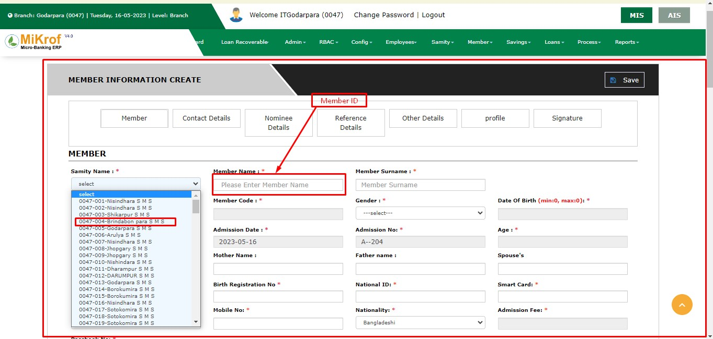এখন সমিতি সিলেক্ট করার পরে স্টার্ট মাইগ্রেশন প্রসেস নামক বাটনে সিলেক্ট করতে হবে। তাহলে নিচের চিত্রের একটি ফর্ম আসবে।
এখানে প্রথম ফিল্ড হচ্ছে মেম্বারের নাম। এখানে পুরাতন মেম্বারের নাম লিখতে হবে। এর পরের ফিল্ড হচ্ছে সারনেইম (Surname)। এর পরের ফিল্ড হচ্ছে এডমিশন ডেইট। এখানে মেম্বারটি যে তারিখে এডমিশন নিয়েছিল তার তারিখ লিখে দিতে হবে। তার পরের ফিল্ড হচ্ছে প্রাইমারি প্রোডাক্ট। এর পরের ফিল্ডটি হচ্ছে সমিতি যা অটো বা নিজে নিজে পূরণ হয়ে যাবে। তারপরের ফিল্ড হচ্ছে বয়স। তারপরের ফিল্ড গুলো হচ্ছে মেম্বার কোড, ভিলেজ ওয়ার্ড, পোষ্ট অফিস এইগুলো নিজে নিজে পূরণ হয়ে যাবে। তার পরের ফিল্ড হচ্ছে পিতা বা স্বামী/স্ত্রী এর পরের ফিল্ড হচ্ছে রিলেশন। তারপরের ফিল্ড গুলো পূরণ করতে হবে। সবগুলো তথ্য সঠিক ভাবে পূরণ করা হলে সেইভ নামক বাটনে ক্লিক করতে হবে। এখন একই সাথে অনেক গুলো মেম্বার একই সমিতিতে অ্যাড করতে হলে নিচের চিত্রের মতো অ্যাড নামক বাটনে ক্লিক করতে হবে।
তাহলে নিচের চিত্রের মতো আরেকটি ফর্ম আসবে।
এখানে ঠিক আগের মতোই সবগুলো তথ্য সঠিক ভাবে পূরণ করে সেইভ নামক বাটনে ক্লিক করতে হবে। এভাবেই পুরাতন মেম্বার গুলোকে মাইগ্রেশন করতে হয়।
সফটওয়্যারে লোন এবং সেভিংস মাইগ্রেশন (Loan & Saving Migration) করার নিয়মাবলী
লোন সেভিংস মাইগ্রেশন (Loan Saving Migration) এ ক্লিক করলে একটা ফিল্ড আসবে সেখানে সমিতি নেইম সিলেক্ট করলে ঐ সমিতির সকল মেম্বারদের লিস্ট আসবে।
সেখানে প্রতিটি মেম্বারের জন্য দুইটা পার্ট আসবে একটা সেভিং পার্ট আরেকটা লোন পার্ট।
Saving: সেভিং পার্টে সেভিং একাউন্ট টাইপ গুলো থাকবে (যেমনঃ MGS, MSS এবং TSS)। একাউন্ট টাইপের নিচে একটা প্লাস (+) চিহ্ন থাকবে। সেখানে ক্লিক করলে সেভিং অ্যাড করার জন্য একটি ফর্ম আসবে। সেখানে সঠিকভাবে ইনফরমেশন গুলো দিয়ে সেইভ বাটনে ক্লিক করলে সেভিং সেইভ হয়ে যাবে।
Loan: লোন পার্টে মেম্বার যে প্রোডাক্ট এর আওতায় সে প্রোডাক্ট এবং পণ্যের নিচে একটা প্লাস (+) চিহ্ন থাকবে। একজন মেম্বার চাইলে সে যে প্রোডাক্ট এর আওতায় আছে সে প্রোডাক্ট এর সাথে পণ্য লোন ও নিতে পারবে। প্লাস (+) চিহ্নে ক্লিক করলে লোন অ্যাড করার জন্য একটি ফর্ম আসবে। সেখানে সঠিকভাবে ইনফরমেশন গুলো দিয়ে সেইভ বাটনে ক্লিক করলে লোন সেইভ হয়ে যাবে। এবং মেম্বারের কত টাকা ডিউ আছে সেটা প্লাস (+) চিহ্নের জায়গায় বসে যাবে।
এমপ্লয়ী ডিগ্রী (Employee Degree) সফটওয়্যারে এন্ট্রির নিয়মাবলী
Employees থেকে Employee Degree তে Click করলে আপনাকে Existing Employee Degree List টি দেখানো হবে।
চিত্রে পেইজটি দেখানো হলঃ
আপনাকে Employee Degree থেকে Add বাটনে Click করতে হবে এবং Degree Entry Form নামের একটি Form Open হবে। তারপর সকল Field এর তথ্য সঠিক ভাবে Fillup করার পর Save বাটনে Click করলে নতুন Degree টি Add হয়ে যাবে এবং সেটি আপনি Employee Degree List এ দেখতে পাবেন।
চিত্রে পেইজটি দেখানো হলঃ
Existing Employee Degree Edit করার জন্য আপানাকে Employee Degree List থেকে কাঙ্ক্ষিত Degree এর ডান দিকে Edit Button (পেন্সিলের মতো) এ Click করতে হবে। তখন পূর্বের তথ্যাবলী সহ একটি Degree Edit নামের Form Open হবে। প্রয়োজনীয় তথ্যাদি Correction করার পর Save বাটনে Click করলে সংশোধিত Degree টি Employee Degree List এ দেখতে পাবেন।
Existing Employee Degree Delete করার জন্য আপানাকে Employee Degree List থেকে কাঙ্ক্ষিত Degree এর ডান দিকে Delete Button এ Click করতে হবে। তখন আপনাকে একটি নিশ্চিতকরণ মেসেজ দেখানো হবে, যেখানে আপনাকে জিজ্ঞাসা করা হবে “আপনি কি নিশ্চিত? এটি Delete করতে চান? আপনি এটি Delete করলে পুনরায় ফিরে পাবেন না!” এখন আপনি যদি নিশ্চিত হয়ে Delete করতে চান তাহলে Yes বাটনে Click করবেন। অন্যথায় No বাটনে Click করে আগের মেনুতে ফিরে আসবেন।
চিত্রে পেইজটি দেখানো হলঃ
এমপ্লয়ীদের (Employees) ইনফরমেশন সফটওয়্যারে এন্ট্রির নিয়মাবলী
এই মেনু থেকে সাধারনত Employee তথ্য জমা রাখা হয় এবং প্রয়োজনে Emloyee এর তথ্য পরিবর্তন ও মুছে দেওয়া যায়।
Employee লিস্টের ডান পাশে Add Employee বাটন আছে। উক্ত বাটনে ক্লিক করে আমরা নতুন Employee এর তথ্য জমা করতে পারি।
Add Employe বাটনে ক্লিক করলে একটি ফর্ম দেখতে পাবেন। ফর্মটি পূরণের মাধ্যমে নতুন কর্মচারীর/কর্মকর্তা তথ্য জমা রাখা হয়।
Employee লিস্টে Action নামে একটি কলাম আছে, যেখানে Edit ও Delete বাটন আছে। কোন একজন কর্মচারীর তথ্য পরিবর্তন করার প্রয়োজন হলে Edit বাটন ক্লিক করতে হবে।
Edit বাটনে ক্লিক করার পর একটি ফর্ম আসবে,উক্ত ফর্মে কর্মচারীর পূর্বের তথ্য প্রদর্শিত হবে। প্রয়োজন অনুসারে তথ্য পরিবর্তন করে Edit ফর্মের নিচে Save নামে একটি বাটন আছে ঐ বাটনে ক্লিক করলে পরিবর্তিত তথ্য সেভ হবে এবং আমরা যদি কোন কর্মচারীর তথ্য মুছে ফেলতে চাই তবে Delete বাটনটি ক্লিক করে তথ্য মুছে দিতে পারি।
Employee টেবিল থেকে কোন emloyee এর তথ্য খুজে বের করতে হলে Employee লিস্ট এর সার্চ বক্সে Employee এর নাম,পদবী এবং ব্রাঞ্চ এর নাম সিলেক্ট করে সার্চ বাটনে ক্লিক করতে হবে। সার্চ বাটনে ক্লিক করলে উক্ত Employee এর তথ্য পাওয়া যাবে।
সফটওয়্যারে এমপ্লয়ী ডিপার্টমেন্ট (Employees Department) যোগ করার নিয়মাবলী
Employees Department এর মধ্যে একটা কোম্পানির সবগুলো ডিপার্টমেন্টের নাম থাকবে এবং ইউজার এডমিন তাদের প্রয়োজন মতে ডিপার্টমেন্ট সংযোগ করতে পারবে এবং প্রয়োজন হলে ডিপার্টমেন্ট এর নাম সংশোধন ও ডিলিট করতে পারবে।
প্রথমে Employee মেনু থেকে Employees Department এ ক্লিক করে Employees Department প্রবেশ করতে হবে। তারপর Employees Department Data Table এর ডান পাশের +Add new Department বাটনে ক্লিক করলে একটা ফর্ম পর্দায় প্রদর্শন হবে
যেখানে “Enter Employee Department name and click Save” একটি ফর্ম আসবে সেখানে Department এর নিচে ইনপুট ফিল্ডে Department এর নাম লেখতে হবে তার পর নিচের Save বাটনে ক্লিক করে Add new Department সম্পূর্ণ করতে হবে।
Employees Department এর ডিপার্টমেন্ট সংশোধন বা ডিলিট করার জন্য Employees Department Data Table এর ডান পাশের Action নামের কলামের এডিট বাটনে ক্লিক করে ডিপার্টমেন্টের নাম সংশোধন করা হয়।
Employees Department এর ডিপার্টমেন্ট ডিলিট করার জন্য Employees Department Data Table এর ডান পাশের Action নামের কলামের ডিলিট বাটনে ক্লিক করলে ডিপার্টমেন্ট টি ডিলিট হয়ে যাবে।

সফটওয়্যারে এমপ্লয়ী ডেজিগনেশন (Employee Designations) যোগ দেওয়ার নিয়মাবলী
এমপ্লয়ী (Employee) ডেজিগনেশন (Designation) হচ্ছে যেখানে এমপ্লয়ীদের পোস্ট বা পদ মর্যাদা অ্যাড করা হয়। এমপ্লয়ী অফশনে মাউস পয়েন্টার রেখে এমপ্লয়ী (Employee) ডেজিগনেশন (Designation) এ ক্লিক করুন।
ক্লিক করলে পূর্বে যোগ থাকা তথ্যসমূহ এমপ্লয়ীদের ডেজিগনেশনের একটি লিস্টে আসবে।
তার পরে এমপ্লয়ী ডেজিগন্যাশন (Employee Designation) লিস্ট বাম দিকে অ্যাড এমপ্লয়ী ডেজিগন্যাশন (Add Employee Designation) নামক একটি বাটন আসবে, ঐ বাটনে ক্লিক করলে একটি ফর্ম আসবে।
সেখানে ডেজিগনেশন নেইম, শর্ট নেইম দিতে হবে এবং একটা ডেজিগনেশন কোড দিতে হবে। তারপর ডেজিগনেশনটি কোন ডিপার্টমেন্টের জন্য সেটির নাম সিলেক্ট করতে হবে এবং ঐ ডেজিগনেশনের স্টার্টিং সেলারি কত সেটা উল্লেখ করে দিতে হবে। সঠিকভাবে ফর্মটি পূরণ করার পর সেইভ বাটনে ক্লিক করলে নতুন এমপ্লয়ী ডেজিগনেশন (Designation) অ্যাড হবে এবং তা লিস্ট এ দেখা যাবে।
ইডিট বাটনে ক্লিক করলে পূর্বের মত একটি ফর্ম ওপেন হবে,উক্ত পূর্বের তথ্য প্রদর্শিত হবে। প্রয়োজন অনুসারে তথ্য পরিবর্তন করে Edit ফর্মের নিচে Save নামে একটি বাটন আছে ঐ বাটনে ক্লিক করলে পরিবর্তিত তথ্য সেভ হবে।
লিস্ট থেকে কোন তথ্য বাদ দিতে হলে তাহলে ডিলিট বাটনে ক্লিক করলে তা ডিলিট হবে
উক্ত লিস্টের মধ্যে যদি কোন তথ্য খুজে বের করতে হয় তাহলে নিচের চিত্র লক্ষ করুন
সফটওয়্যারে এমপ্লয়ী রেস্পন্সিবিলিটি হিস্ট্রি (Employee Responsibility Histories) এন্ট্রির নিয়মাবলী
প্রথমে এমপ্লয়ী (Employee) নামক মডিউলে মাউস পয়েন্টার নিলে নিচের মতো অনেক গুলো অপশন থেকে এমপ্লয়ী রেসপনসিবিলিটি হিস্ট্রি (Employee Responsibility Histories) নামক অপশনে ক্লিক করতে হবে।
এরপর এমপ্লয়ী রেসপনসিবিলিটি হিস্ট্রি নামক নিচের মতো একটি পেইজ আসবে।
এখানে এমপ্লয়ী বা চাকরিজীবীদের রেসপনসিবিলিটি হিস্ট্রি গুলো তালিকা আকারে দেখা যাবে। এরপর নিচের ছবির মতো উপরের ডান পাশে অ্যাড এমপ্লয়ী রেসপনসিবিলিটি হিস্ট্রি নামক বাটনে ক্লিক করতে হবে।তারপর নিচের মতো একটি অ্যাড ফর্ম আসবে।
প্রথমে যে এমপ্লয়ীর দায়িত্ব তথা রেসপনসিবিলিটি থাকবে তার ব্রাঞ্চ বা শাখার নাম সিলেক্ট করতে হবে। তারপরের ফিল্ড হচ্ছে এমপ্লয়ীর নাম তা পূরণ করতে হবে এরপরেফিল্ড হচ্ছে কোন তারিখ হতে তার রেসপনসিবিলিটি বা দায়িত্ব শুরু হবে তার তারিখ উল্লেখ বা এন্ট্রি করে দিতে হবে এরপরে ফিল্ড হচ্ছে কোন তারিখে তার (এমপ্লয়ীর) দায়িত্ব বা রেসপনসিবিলিটি শেষ হবে তার তারিখ লিখে দিতে হবে।
এভাবে সবগুলো ফিল্ড পূরণ করে সেইভ নামক বাটনে ক্লিক করতে হবে। সেইভ করা তথ্য গুলো এমপ্লয়ী রেসপনসিবিলিটি হিস্ট্রি নামক লিস্টে দেখাবে। যদি ইনফরমেশন বা তথ্যে কোন ভুল থাকে তাহলে নিচের মতো এডিট বাটনে ক্লিক করলে পূর্বের মত একটি ফর্ম দেখতে পাবেন,উক্ত ফর্মে পূর্বের তথ্য প্রদর্শিত হবে। প্রয়োজন অনুসারে তথ্য পরিবর্তন করে Edit ফর্মের নিচে Save নামে একটি বাটন আছে ঐ বাটনে ক্লিক করলে পরিবর্তিত তথ্য সেভ হবে।
আবার কোন তথ্য বাদ দিতে হলে নিচের ছবির মতো ডিলিট নামক বাটনে ক্লিক করলে তথ্য কি সত্যি ডিলিট করতে চাই কিনা? এই রকম একটা নোটিফিকেশন আসবে ঐখানে হ্যা নামক বাটনে ক্লিক করলে তথ্য ডিলিট হয়ে যাবে।
এই লিস্ট থেকে নিচের মতো তথ্য অনুসন্ধান করা যাবে।
সফটওয়্যারে এমপ্লয়ী প্রমোশন/ডিমোশন (Employee Promotion/Demotion) এন্ট্রির নিয়মাবলী
প্রথমে এমপ্লয়ী (Employees) নামক মডিউলে মাউস পয়েন্টার নিলে নিচের মতো অনেক গুলো অপশন থেকে এমপ্লয়ী প্রমোশন(Employee Promotion/Demotion) নামক অপশনে ক্লিক করতে হবে।
এরপর নিচের মতো এমপ্লয়ী প্রমোশন নামক পেইজটি আসবে।
এখানে যেসব এমপ্লয়ীদের প্রমোশন দেওয়া হয়েছে তার তালিকা দেখা যাবে। যদি নতুন তথ্য অ্যাড দেওয়ার প্রয়োজন হয় তাহলে নিচের মতো বাটনে ক্লিক করতে হবে।
তারপর অ্যাড এমপ্লয়ী প্রমোশন নামক নিচের মতো একটি ফর্ম আসবে।
প্রথমে যে এমপ্লয়ী বা চাকুরিজিবী যে ব্রাঞ্চ বা শাখায় আছে তার তথ্য লিখতে বা এন্ট্রি দিতে হবে,এরপর যে ফিল্ড আছে তাতে যে এমপ্লয়ীকে প্রমোশন দেওয়া হবে তার নাম লিখতে হবে, ওল্ড ডেজিগনেশান এই ফিল্ডে এমপ্লয়ীর পুরোনো বা যে পদবী থেকে প্রমোশন পাবে তা লিখতে হবে। তারপরের ফিল্ডে নতুন যে পদবীতে প্রমোশন দেওয়া হবে তা লিখতে হবে। এরপর সব তথ্য সঠিক ভাবে লিখা বা এন্ট্রি করা হলে সেইভ নামক বাটনে ক্লিক করলে তথ্য সেইভ বা সংরক্ষিত হবে।
সংরক্ষিত তথ্য সমূহ লিস্ট এর মধ্যে দেখা যাবে। যদি কোন তথ্য পরিবর্তন করার প্রয়োজন হয় তাহলে নিচের মতো এডিট নামক বাটনে ক্লিক করলে পূর্বের মত একটি ফর্ম দেখতে পাবেন,উক্ত ফর্মে পূর্বের তথ্য প্রদর্শিত হবে। প্রয়োজন অনুসারে তথ্য পরিবর্তন করে Edit ফর্মের নিচে Save নামে একটি বাটন আছে ঐ বাটনে ক্লিক করলে পরিবর্তিত তথ্য সেভ হবে।
আবার কোন এমপ্লয়ীর প্রমোশন/ডিমোশন তথ্য বাদ দিতে হলে ডিলিট নামক নিচের মতো বাটনে ক্লিক করলে তথ্য ডিলিট হয়ে যাবে।
এখানে প্রমোশন/ডিমোশন তথ্যর লিস্ট থেকে নিচের মতো ক্যাটাগরি অনুযায়ী তথ্য অনুসন্ধান করা যাবে।
সফটওয়্যারে এমপ্লয়ী রিজাইন/টারমিনেশন (Employee Resign/Termination) এন্ট্রির নিয়মাবলী
এমপ্লয়ী(Employees) মডিউলে মাউস পয়েন্টার রাখলে এমপ্লয়ী রিজাইন/টারমিনেশন (Employee Resign/Termination) লেখাটি দেখতে পাবো।
ক্লিক করার সাথে সাথে যে সব এমপ্লয়ীরা চাকরীচ্যুত অথবা চাকরি অব্যাহতি হয়েছে তাদের একটি তালিকা দেখতে পাবো।
যদি কোনো নির্দিষ্ট এমপ্লয়ীর তথ্য জানতে চাই তাহলে ঐ এমপ্লয়ীর কোড এবং ব্রাঞ্চ নাম দিয়ে সার্চ করতে হবে।
তথ্য বাদ দিয়ে দিতে চাইলে লিস্ট এর ডান সাইডে অ্যাকশন লেখার নিচে যে লাল বাটন বা ডিলিট এর আইকন আছে ঐ বাটন এ ক্লিক করলে ডিলিট অপারেশন কমপ্লিট হবে।
তথ্য অ্যাড করার সময় যদি কোনো ভুল হয়ে থাকে তাহলে তা এডিট করবো। ডিলিট বাটন এর পাশেই এডিট বাটন ঐ বাটনে ক্লিক পূর্বের মত একটি ফর্ম দেখতে পাবেন,উক্ত ফর্মে পূর্বের তথ্য প্রদর্শিত হবে। প্রয়োজন অনুসারে তথ্য পরিবর্তন করে Edit ফর্মের নিচে Save নামে একটি বাটন আছে ঐ বাটনে ক্লিক করলে পরিবর্তিত তথ্য সেভ হবে।
এরপর যদি কোনো এমপ্লয়ী রিজাইন দেয় তাকে অ্যাড দিতে হবে অ্যাড নিউ বাটন ক্লিক করুন।
এরপর একটি ফর্ম দেখতে পাবো এরপর ব্রাঞ্চ নাম এবং এমপ্লয়ী সিলেক্ট করলে লিস্ট জেনারেট হবে লিস্ট থেকে তথ্য গুলো সঠিক আছে কিনা তা চেক করে সেভ বাটন এ ক্লিক করবো। এভাবে এমপ্লয়ী রিজাইন/টারমিনেশন এর কাজ শেষ।
এমপ্লয়ী রিলিজ (Employee Release) সফটওয়্যারে এন্ট্রির নিয়মাবলী
Employees থেকে Employee Release তে Click করলে আপনাকে Existing Employee Release List টি দেখানো হবে।
চিত্রে পেইজটি দেখানো হলঃ
আপনাকে Employee Release থেকে Add বাটনে Click করতে হবে এবং ADD EMPLOYEE RESIGN/TERMINATION নামের একটি Form Open হবে। তারপর সকল Field এর তথ্য সঠিক ভাবে Fillup করার পর Save বাটনে Click করলে নতুন Employee Release টি Add হয়ে যাবে এবং সেটি আপনি Employee Release List এ দেখতে পাবেন।
চিত্রে পেইজটি দেখানো হলঃ
Existing Employee Release Delete করার জন্য আপানাকে Employee Release List থেকে কাঙ্ক্ষিত Degree এর ডান দিকে Delete Button এ Click করতে হবে। তখন আপনাকে একটি নিশ্চিতকরণ মেসেজ দেখানো হবে, যেখানে আপনাকে জিজ্ঞাসা করা হবে “আপনি কি নিশ্চিত? এটি Delete করতে চান? আপনি এটি Delete করলে পুনরায় ফিরে পাবেন না!” এখন আপনি যদি নিশ্চিত হয়ে Delete করতে চান তাহলে Yes বাটনে Click করবেন। অন্যথায় No বাটনে Click করে আগের মেনুতে ফিরে আসবেন।
চিত্রে পেইজটি দেখানো হলঃ
এমপ্লয়ী জয়েনিং (Employee Joining) সফটওয়্যারে এন্ট্রির নিয়মাবলী
Employees থেকে Employee Joining এ Click করলে আপনাকে Existing Employee Joining List টি দেখানো হবে।
চিত্রে পেইজটি দেখানো হলঃ
আপনাকে Employee Joining থেকে Add বাটনে Click করতে হবে এবং ADD EMPLOYEE নামের একটি Form Open হবে। তারপর সকল Field এর তথ্য সঠিক ভাবে Fillup করার পর Save বাটনে Click করলে নতুন Employee Joining টি Add হয়ে যাবে এবং সেটি আপনি Employee Joining List এ দেখতে পাবেন।
চিত্রে পেইজটি দেখানো হলঃ

Existing Employee Joining Delete করার জন্য আপানাকে Employee Joining List থেকে কাঙ্ক্ষিত Joining এর ডান দিকে Delete Button এ Click করতে হবে। তখন আপনাকে একটি নিশ্চিতকরণ মেসেজ দেখানো হবে, যেখানে আপনাকে জিজ্ঞাসা করা হবে “আপনি কি নিশ্চিত? এটি Delete করতে চান? আপনি এটি Delete করলে পুনরায় ফিরে পাবেন না!” এখন আপনি যদি নিশ্চিত হয়ে Delete করতে চান তাহলে Yes বাটনে Click করবেন। অন্যথায় No বাটনে Click করে আগের মেনুতে ফিরে আসবেন।
চিত্রে পেইজটি দেখানো হলঃ
সফটওয়্যারে সমিতি (Samity) খোলার নিয়মাবলী
সমিতি (Samity) মডিউলে মাউস পয়েন্টার রেখে সমিতিতে (Samity) ক্লিক করলে ঐ শাখার সকল সমিতির লিস্ট দেখতে পাবেন। সেখান থেকে আমরা সমিতির সকল তথ্য দেখতে পারি এবং ডিলিট বাটনে ক্লিক করে অপ্রয়োজনীয় তথ্য ডিলিট করতে পারি। আর এডিট বাটনে ক্লিক করে পূর্বের তথ্য সংশোধন করতে পারি।
নতুন কোনো সমিতি (Samity) অ্যাড করতে হলে অ্যাড নিউ সমিতি (Add New Samit) বাটনে ক্লিক করতে হবে।
তারপর একটি ফর্ম আসবে। সেখানে প্রথমে সমিতির নেইম দিতে হবে তারপর সমিতিটি কোন প্রোডাক্ট এর আওতায় তা সিলেক্ট করে দিতে হবে। তারপর সমিতির Working Area সিলেক্ট করে দিতে হবে। এবং ঐ সমিতি কোন ফিল্ড অফিসারের আওতায় সেটি সিলেক্ট করে দিতে হবে। তারপর সমিতি ডে অথবা ফিক্সড ডে সিলেক্ট করতে করতে হবে। এবং সমিতির টাইম সেট করে দিতে হবে। তারপর সমিতিটি কোন টাইপের হবে অর্থাৎ মেল হবে নাকি ফিমেল টাইপ হবে সেটি সিলেক্ট করে দিতে হবে। সমিতিটি যদি পরবর্তীতে অন্য কোনো ব্রাঞ্চে ট্রান্সফার করতে হয় তাহলে Is transfer? এ টিক মার্ক চিহ্ন দিতে হবে অন্যথায় আনমার্ক অবস্থায় রাখতে হবে। তারপর ব্রাঞ্চের ম্যাক্সিমাম মেম্বার কত জন হবে সেটি উল্লেখ করে দিতে হবে। সেইভ বাটনে ক্লিক করলে নতুন সমিতি তৈরী হয়ে যাবে এবং তা সমিতি লিস্টে দেখা যাবে।
সফটওয়্যারে সমিতি ফিল্ড অফিসার (Samity Field Officer) কনফিগার করার নিয়মাবলী
Samity মডিউলের ভিতরে Samity Field Officers Change নামে একটি অপশন আছে। Samity Field Officers Change হচ্ছে কোন সমিতির ফিল্ড পর্যায়ের কর্মীকে পরিবর্তন করার কাজ এইখান থেকে করা হয়।
Samity Field Officers Change এ ক্লিক করার পর একটি লিস্ট প্রদর্শিত হয়,উক্ত লিস্টে পরিবর্তিত অফিসারদের যাবতীয় তথ্য সংরক্ষণ করা হয়। লিস্টের ডান পাশে এবং নিচের অংশে একটি add বাটন আছে।
Add বাটনে ক্লিক করার পর একটি ফর্ম আসবে। ফর্মে কোন সমিতির অধিনে অফিসার পরিবর্তন করতে হবে তা সিলেক্ট করতে হবে। সমিতি সিলেক্ট করে Old Officers ফিল্ডে পূর্বের অফিসারের নাম আসবে অর্থাৎ ঐ সমিতির পূর্বের ফিল্ড অফিসার এর নাম আসবে। তারপর New Field Officers ফিল্ডে নতুন যে কর্মি কাজ করবে তা সিলেক্ট করতে হবে। এরপর Save বাটনে ক্লিক করবো এতে তথ্য সেভ হবে
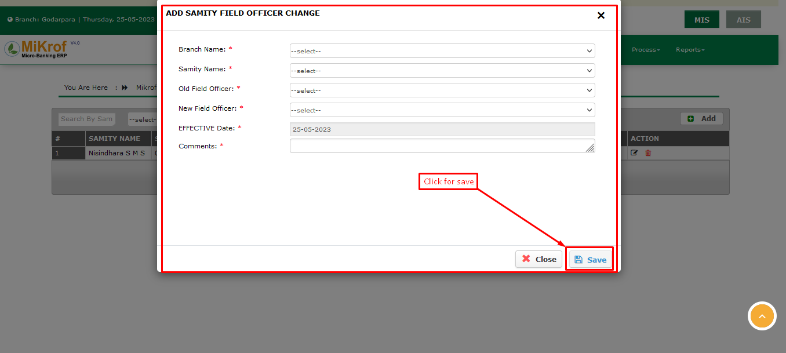
যা আমরা লিস্টে দেখতে লিস্টের উপরে বাম পাশে একটি সার্চ বক্স আছে যেখানে সমিতির নাম ধরে উক্ত সমিতির তথ্য খুজে বের করা যায়।
লিস্টের Action নামে একটি কলাম আছে যেখানে Edit & Delete নামে দুইটি বাটনে আছে। ডিলিট বাটনে ক্লিক করে অপ্রয়োজনীয় তথ্য ডিলিট করতে পারি
এবং কোনো তথ্য সংশোধন করার প্রয়োজন হলে Edit বাটনে ক্লিক করলে পূর্বের মত একটি ফর্ম দেখতে পাবেন,উক্ত ফর্মে পূর্বের তথ্য প্রদর্শিত হবে। প্রয়োজন অনুসারে তথ্য পরিবর্তন করে Edit ফর্মের নিচে Save নামে একটি বাটন আছে ঐ বাটনে ক্লিক করলে পরিবর্তিত তথ্য সেভ হবে। পরিবর্তিত তথ্য লিস্টে দেখতে পাবো।

সমিতি ফিল্ড অফিসার ব্যাচ চেঞ্জ (Samity Field Officer Batch Change) সফটওয়্যারে এন্ট্রির নিয়মাবলী
Samity থেকে Samity Field Officer Batch Change এ Click করলে আপনাকে Existing Samity Field Officer Batch Change List টি দেখানো হবে।
চিত্রে পেইজটি দেখানো হলঃ
আপনাকে Samity Field Officer Batch Change থেকে Add বাটনে Click করতে হবে এবং ADD SAMITY FIELD OFFICER BATCH CHANGE নামের একটি Form Open হবে। তারপর সকল Field এর তথ্য সঠিক ভাবে Fillup করার পর Save বাটনে Click করলে নতুন Samity Field Officer Batch Change টি Add হয়ে যাবে এবং সেটি আপনি List এ দেখতে পাবেন।
চিত্রে পেইজটি দেখানো হলঃ
Existing Samity Field Officer Batch Change Edit করার জন্য আপানাকে Samity Field Officer Batch Change List থেকে কাঙ্ক্ষিত Samity এর ডান দিকে Edit Button (পেন্সিলের মতো) এ Click করতে হবে। তখন পূর্বের তথ্যাবলী সহ একটি EDIT SAMITY FIELD OFFICER CHANGE নামের Form Open হবে। প্রয়োজনীয় তথ্যাদি Correction করার পর Save বাটনে Click করলে সংশোধিত Samity টি Samity Field Officer Batch Change List এ দেখতে পাবেন।
Existing Samity Field Officer Batch Change Delete করার জন্য আপানাকে Samity Field Officer Batch Change List থেকে কাঙ্ক্ষিত Samity এর ডান দিকে Delete Button এ Click করতে হবে। তখন আপনাকে একটি নিশ্চিতকরণ মেসেজ দেখানো হবে, যেখানে আপনাকে জিজ্ঞাসা করা হবে “আপনি কি নিশ্চিত? এটি Delete করতে চান? আপনি এটি Delete করলে পুনরায় ফিরে পাবেন না!” এখন আপনি যদি নিশ্চিত হয়ে Delete করতে চান তাহলে Yes বাটনে Click করবেন। অন্যথায় No বাটনে Click করে আগের মেনুতে ফিরে আসবেন।
চিত্রে পেইজটি দেখানো হলঃ
সফটওয়্যারে সমিতি ডে চেইন্জ (Samity Day Change) করার নিয়মাবলী
সমিতি ডে চেইন্জ(Samity Day Change) হচ্ছে, যে দিন সমিতির কিস্তি বা ইন্সটলমেন্ট দেওয়া হবে তার সময় বা বার। অর্থাৎ এই বার পরিবর্তন করার জন্যই এটি ব্যবহার করা হয়। প্রথমে সমিতি(Samity) নামক মডিউল এ ক্লিক করলে কতগুলো সাব-মডিউল বা অপশন আসবে নিচের মতো করে ।
এখান থেকে সমিতি ডে চেইন্জ(Samity Day Change) নামক মডিউলে মাউস পয়েন্টার নিলে নিচের মতো একটা লিস্ট দেখতে পাবো।
এখানে যে যে সমিতির ডে গুলো পরিবর্তন করা হয়েছে তার তালিকা দেখা যাবে। এখন কোন সমিতির ডে বা কিস্তির দিন পরিবর্তন করতে হলে এ পেইজের উপরের ডান পাশের অ্যাড নামক বাটনে ক্লিক করতে হবে। যা নিচে দেখানো হলো।
তাহলে নিচের মতো একটি ফর্ম আসবে।
এখানে যে সমিতির বার পরিবর্তন করা হবে তার নাম সিলেক্ট করতে হবে। তার পরের ফিল্ড হচ্ছে সমিতির বর্তমান যে বার আছে তা দেখা যাবে। এরপরের ফিল্ডে নতুন যে বার বা দিন ঠিক করতে চাই তা লিখতে হবে। এভাবে সব কিছু সঠিক ভাবে পরিবর্তন করা হয়ে গেলে নিচের মতো করে সেইভ বাটনে ক্লিক করলে তথ্য গুলো সংরক্ষিত হবে। যদি ফিল্ড গুলো সঠিক ভাবে পূরণ করা না হয় তাহলে এরর বা ফেইল্ড নোটিফিকেশন দেখাবে। এখন সংরক্ষিত তথ্যটি আগের মতো লিস্টে দেখাবে।
যদি কোন তথ্য পরিবর্তন করার প্রয়োজন হয় তাহলে নিচের মতো করে এডিট বাটনে ক্লিক করলে পূর্বের মত একটি ফর্ম দেখতে পাবেন,উক্ত ফর্মে পূর্বের তথ্য প্রদর্শিত হবে। প্রয়োজন অনুসারে তথ্য পরিবর্তন করে Edit ফর্মের নিচে Save নামে একটি বাটন আছে ঐ বাটনে ক্লিক করলে পরিবর্তিত তথ্য সেভ হবে।
আবার কোন তথ্য যদি বাদ দিতে হয় তাহলে উপরের মতো ডিলিট বাটনে ক্লিক করতে হবে। তাহলে তথ্য মুছে যাবে।
সফটওয়্যারে সমিতি ক্লোজিং (Samity Closing) করার নিয়মাবলী
সমিতি(Samity) মডিউলে মাউস পয়েন্টার রাখলে একেবারে শেষে সমিতি ক্লোজিং (Samity Closing) দেখতে পাবো।
সমিতি ক্লোজিং এ ক্লিক করার সাথে সাথে সমিতি ক্লোজিং লিস্ট দেখতে পাবো। অর্থাৎ, পূর্বে যে সব সমিতি গুলো ক্লোজিং হয়েছে।
কোনো নির্দিষ্ট তথ্য জানার জন্য সমিতি নাম অথবা সমিতি কোড এবং তারিখ দিয়ে সার্চ করলে কাঙ্খিত তথ্য দেখতে পাবো।
সমিতি লিস্টের ঠিক ডান পাশেই অ্যাড বাটন ক্লিক করুন
ক্লিক করলে একটি ফর্ম দেখতে পাবো ফর্মে সঠিক তথ্য দিয়ে সেভ বাটন এ ক্লিক করবো।
সেভ হয়ে তা সরাসরি সমিতি ক্লোজিং লিস্ট এ চলে যাবে। লিস্ট থেকে চেক করে নিব অ্যাড হওয়া তথ্য সঠিক আছে কিনা।
যদি কোন তথ্য পরিবর্তন করার প্রয়োজন হয় তাহলে নিচের মতো করে এডিট বাটনে ক্লিক করলে পূর্বের মত একটি ফর্ম দেখতে পাবেন,উক্ত ফর্মে পূর্বের তথ্য প্রদর্শিত হবে। প্রয়োজন অনুসারে তথ্য পরিবর্তন করে Edit ফর্মের নিচে Save নামে একটি বাটন আছে ঐ বাটনে ক্লিক করলে পরিবর্তিত তথ্য সেভ হবে
আবার কোন তথ্য যদি বাদ দিতে হয় তাহলে নিচের মতো ডিলিট বাটনে ক্লিক করতে হবে তাহলে তথ্য মুছে যাবে।
সফটওয়্যারে মেম্বার ইনফরমেশন (Member Information) সফটওয়্যারে এন্ট্রি নিয়মাবলী
মেম্বার (Member) মডিউলে এ মাউস পয়েন্টার রেখে মেম্বার ইনফরমেশন এ ক্লিক করলে সকল মেম্বারের তথ্য পাওয়া যায়
এবং ডান পাশের ভিউ বাটনে ক্লিক করে প্রয়োজনে পুরো তথ্য দেখা যায়। ডিলিট বাটনে ক্লিক করে অপ্রয়োজনীয় তথ্য ডিলিট করা যায়। ইডিট বাটনে ক্লিক করে ভুল তথ্য আপডেট বা সংশোধন করা যায়। নতুন কোনো মেম্বার অ্যাড করতে হলে অ্যাড নিউ মেম্বার বাটনে ক্লিক করতে হবে।
ক্লিক করার পর একটি ফর্ম আসবে। সেখানে মেম্বারের সকল প্রয়োজনীয় তথ্য পূরণ করে সেভ বাটনে ক্লিক করলে নতুন মেম্বার অ্যাড হয়ে যাবে।
সফটওয়্যারে মেম্বারের সকল তথ্য (মেম্বার ইনফরমেশন, লোন ইনফরমেশন, সেভিংস ইনফরমেশন, এডমিশন হিস্ট্রি, স্ট্যাটাস) দেখার নিয়মাবলী
প্রথমে নিচের চিত্রের মতো মেম্বার (Member) নামক মডিউল থেকে মেম্বার ইনফরমেশন নামক অপশনে ক্লিক করতে হবে।
তাহলে নিচের চিত্রের মতো সকল মেম্বারদের তালিকা সম্বলিত লিস্টে আসবে।
যদি কোন নির্দিষ্ট মেম্বারের তথ্য বের করতে হয় তাহলে নিচের মতো সার্চ অপশান ব্যাবহার করে ঐ মেম্বারকে খুজে বের করা যায়।
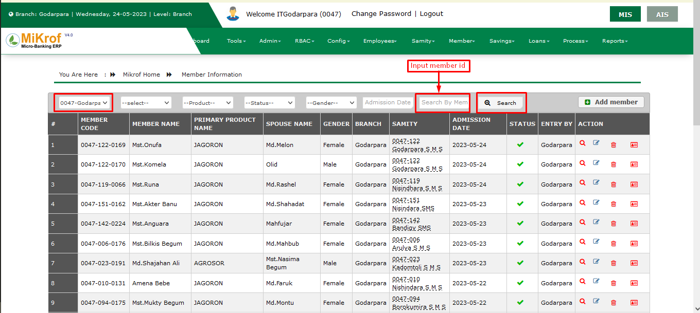কোন মেম্বারের সকল তথ্য দেখতে হলে নিচের চিত্রের মতো বাটনে ক্লিক করতে হবে।
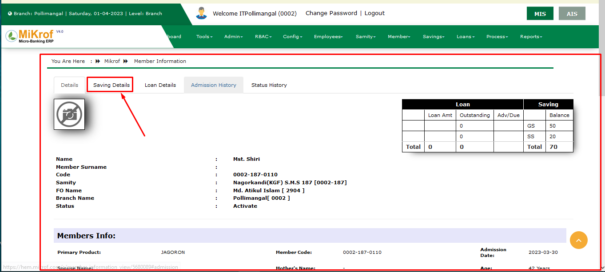তাহলে নিচের চিত্রের মতো মেম্বারের সকল ইনফরমেশন সংক্রান্ত তথ্য পেজ আসবে।
এই পেজের মধ্যে মেম্বারের লোন এবং সেভিংস সংক্রান্ত সকল তথ্য দেখা যাবে। এখন চিত্রে দেখানো বাটনে এ ক্লিক করলে নিচের চিত্রের মতো শুধুমাত্র ঐ মেম্বারের সেভিংস সংক্রান্ত সকল তথ্য দেখা যাবে।
এখানে মেম্বারের যতগুলো সেভিংস আছে সবগুলোর আলাদা আলাদা তথ্য দেখা যাবে। এখন চিত্রে দেখানো বাটনে এ ক্লিক করলে নিচের চিত্রের মতো মেম্বারের শুধুমাত্র লোন সংক্রান্ত তথ্য দেখা যাবে।

এখানে মেম্বারের সকল লোনের বিস্তারিত বর্ণনা দেখা যাবে। এখন চিত্রে উল্লেখিত বাটনে এ ক্লিক করলে নিচের চিত্রের মতো মেম্বারের এডমিশন হিস্ট্রি তথ্য দেখা যাবে।
এখানে মেম্বারের এডমিশন সংক্রান্ত তথ্য দেখা যাবে। এখন চিত্রের মতো বাটনে এ ক্লিক করলে মেম্বারের স্ট্যাটাস এর তথ্য দেখা যাবে।

মেম্বার সোসিও ইকনোমিক স্ট্যাটাস (Member Socio Economic Status) সফটওয়্যারে এন্ট্রির নিয়মাবলী
Member থেকে Member Socio Economic Status এ Click করলে আপনাকে Existing Member Socio Economic Status List টি দেখানো হবে।
চিত্রে পেইজটি দেখানো হলঃ
নতুন Member Socio Economic Status Add করার নিয়মঃ
আপনাকে Member Socio Economic Status থেকে Add বাটনে Click করতে হবে এবং Member Socio Status নামের একটি Form Open হবে। তারপর সকল Field এর তথ্য সঠিক ভাবে Fillup করার পর Save বাটনে Click করলে নতুন Member Socio Economic Status টি Add হয়ে যাবে এবং সেটি আপনি Member Socio Economic Status List এ দেখতে পাবেন।
চিত্রে পেইজটি দেখানো হলঃ

Existing Member Socio Economic Status Edit করার জন্য আপানাকে Member Socio Economic Status List থেকে কাঙ্ক্ষিত Member এর ডান দিকে Edit Button (পেন্সিলের মতো) এ Click করতে হবে। তখন পূর্বের তথ্যাবলী সহ Member Socio information edit নামের একটি Form Open হবে। প্রয়োজনীয় তথ্যাদি Correction করার পর Save বাটনে Click করলে সংশোধিত Member Socio Economic Status টি Member Socio Economic Status List এ দেখতে পাবেন।
Existing Member Socio Economic Status Delete করার জন্য আপানাকে Member Socio Economic Status List থেকে কাঙ্ক্ষিত Member এর ডান দিকে Delete Button এ Click করতে হবে। তখন আপনাকে একটি নিশ্চিতকরণ মেসেজ দেখানো হবে, যেখানে আপনাকে জিজ্ঞাসা করা হবে “আপনি কি নিশ্চিত? এটি Delete করতে চান? আপনি এটি Delete করলে পুনরায় ফিরে পাবেন না!” এখন আপনি যদি নিশ্চিত হয়ে Delete করতে চান তাহলে Yes বাটনে Click করবেন। অন্যথায় No বাটনে Click করে আগের মেনুতে ফিরে আসবেন।
চিত্রে পেইজটি দেখানো হলঃ
মেম্বার গার্ডিয়ান ইনফো (Member Guardian Info) সফটওয়্যারে এন্ট্রির নিয়মাবলী
Member থেকে Member Guardian Info তে Click করলে আপনাকে Existing Member Guardian Info List টি দেখানো হবে।
চিত্রে পেইজটি দেখানো হলঃ
নতুন Member Guardian Info Add করার নিয়মঃ
আপনাকে Member Guardian Info থেকে Add বাটনে Click করতে হবে এবং Member Guardian Info নামের একটি Form Open হবে। তারপর সকল Field এর তথ্য সঠিক ভাবে Fillup করার পর Save বাটনে Click করলে নতুন Member Guardian Info টি Add হয়ে যাবে এবং সেটি আপনি Member Guardian Info List এ দেখতে পাবেন।
চিত্রে পেইজটি দেখানো হলঃ
Existing Member Guardian Info Edit করার জন্য আপানাকে Member Guardian Info List থেকে কাঙ্ক্ষিত Member এর ডান দিকে Edit Button (পেন্সিলের মতো) এ Click করতে হবে। তখন পূর্বের তথ্যাবলী সহ Member Guardian information edit নামের একটি Form Open হবে। প্রয়োজনীয় তথ্যাদি Correction করার পর Save বাটনে Click করলে সংশোধিত Member Guardian Info টি List এ দেখতে পাবেন।
চিত্রে পেইজটি দেখানো হলঃ
মেম্বার ইনফরমেনশন বাই ন্যাশনাল আইডি (Member Information By National Id) দিয়ে সার্চ করার নিয়মাবলী
কোন সদস্য ভর্তি করার সময় যেহেতু জাতীয় পরিচয়পত্র অথবা জন্ম নিবন্ধন নাম্বার বাধ্যতামূলক করা হয় তাহলে এই অপশন এর মাধ্যমে খুব সহজে জাতীয় পরিচয়পত্র নাম্বার এর মাধ্যমে যে কোন সদস্য কে খুজে বের করা সম্ভব। এমনকি সদস্য যদি একই প্রতিষ্ঠান এর এক শাখা থেকে একবার লোন নেওয়ার পর যদি অন্য কোন শাখা থেকে আবার লোন গ্রহণ করার চেষ্টা করে। সেক্ষেত্রে জাতীয় পরিচয়পত্র নাম্বার দেওয়ার সাথে সাথেই উক্ত মেম্বার এর সকল তথ্য সফটওয়্যারে প্রদর্শন করবে।
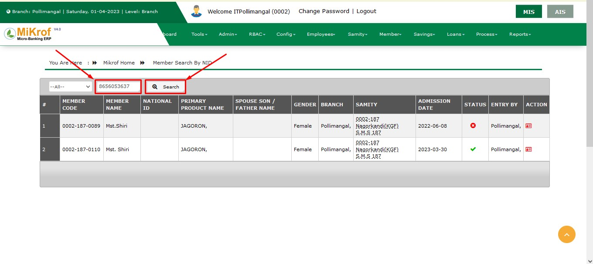মেম্বারের জাতীয় পরিচয়পত্র নাম্বার চিত্রের No.1 ইনপুট বক্সে বসিয়ে চিত্রের No.2 সার্চ বাটনে ক্লিক করলে নিচের লিস্টে উক্ত মেম্বার এর সকল তথ্য প্রদর্শন হবে।
উক্ত চিত্রে No.3 এডিট বাটনে ক্লিক করলে পূর্বের মত একটি ফর্ম দেখতে পাবেন,উক্ত ফর্মে পূর্বের তথ্য প্রদর্শিত হবে। প্রয়োজন অনুসারে তথ্য পরিবর্তন করে Edit ফর্মের নিচে Save নামে একটি বাটন আছে ঐ বাটনে ক্লিক করলে পরিবর্তিত তথ্য সেভ হবে। এবং উক্ত মেম্বার এর সকল তথ্য চিত্রের No.4 ডিলিট বাটনে ক্লিক করে মুছে ফেলা হয়
মেম্বার সমিতি ট্রান্সফার (Member Samity Transfer) করার নিয়মাবলী
মেম্বার সমিতি ট্রান্সফার (Member Samity Transfer) হচ্ছে কোন সমিতির মেম্বারকে অন্য কোন নতুন বা পুরাতন কোন সমিতিতে ট্রান্সফার করা। তবে কোন মেম্বারকে অন্য সমিতিতে ট্রান্সফার করতে হলে অবশ্যই তার লোন বা ঋণ এর টাকা সম্পূর্ন পরিশোধ করতে হবে এবং ট্রান্সফার এর সময় তার ডিপোজিট থাকলে তা সফটওয়্যার অটোমেটিক উইথড্র করবে, এবং ডিপোজিট একাউন্ট বন্ধ হয়ে যাবে এবং নতুন সমিতিতে মেম্বার নতুন কোড পাবে।
মেম্বার সমিতি ট্রান্সফার (Member Samity Transfer) করতে হলে প্রথমে মেম্বার (Member) নামক মডিউলে মাউস পয়েন্টার নিলে নিচের মতো কতগুলো অপশান থেকে মেম্বার সমিতি ট্রান্সফার (Member Samity Transfer) নামক অপশানে ডাবল ক্লিক করতে হবে।
তাহলে নিচের মতো একটা পেজ আসবে।
এখানে যেসব মেম্বারকে এক সমিতি থেকে অন্য সমিতিতে ট্রান্সফার করা হয়েছে তার তালিকা দেখা যাবে। এখন কোন মেম্বারকে অন্য সমিতিতে ট্রান্সফার করতে হলে এই পেজের উপরের ডান পাশে নিচের মতো অ্যাড নামক বাটনে ক্লিক করতে হবে।
তাহলে নিচের মতো একটা ফর্ম আসবে।
এখানে ফর্মের মধ্যে প্রথম ফিল্ড হচ্ছে ব্রাঞ্চ নেইম যা ডিফল্ট ঠিক করা বা লেখা থাকবে। এর পরের ফিল্ড হচ্ছে মেম্বার নেইম এখানে যে মেম্বারকে ট্রান্সফার করা হবে তার নাম উল্লেখ করতে হবে। তাহলে এর পরের ফিল্ড অটো বা নিজে নিজে পূরণ হয়ে যাবে। এবং তার পরের ফিল্ড ও পূরণ হয়ে যাবে। যেখানে মেম্বারের সমিতি দেখা যাবে। এর পরের ফিল্ড হচ্ছে নিউ প্রাইমারি প্রডাক্ট কোড যাতে মেম্বার যে নতুন সমিতিতে ট্রান্সফার হবে ঐ সমিতিতে তার প্রোডাক্ট কোড বা টাইপ লেখে দিতে হবে। এর পরের ফিল্ড হচ্ছে কোন সমিতিতে ট্রান্সফার করা হবে তার নাম লিখতে হবে। যার ফলে পরের ফিল্ডে নিজে নিজে নতুন মেম্বার আইডি সেট হয়ে যাবে।
সব কিছু সঠিক ভাবে পূরণ করা হলে এইবার সেইভ নামক বাটনে ক্লিক করতে হবে। তাহলে তথ্য সমূহ সংরক্ষিত হবে। যদি কোন ফিল্ড খালি থাকে অথবা সঠিক ভাবে পূরণ করা না হয় তাহলে এরর বা ফেইল্ড নোটিফিকেশন দেখাবে।
এখন সংরক্ষিত তথ্য সমূহ লিস্টে দেখাবে। এখন কোন তথ্য পরিবর্তন করার প্রয়োজন হলে নিচের মতো এডিট বাটনে করলে পূর্বের মত একটি ফর্ম দেখতে পাবেন,উক্ত ফর্মে পূর্বের তথ্য প্রদর্শিত হবে। প্রয়োজন অনুসারে তথ্য পরিবর্তন করে Edit ফর্মের নিচে Save নামে একটি বাটন আছে ঐ বাটনে ক্লিক করলে পরিবর্তিত তথ্য সেভ হবে। পরিবর্তিত তথ্য লিস্টে দেখতে পাবো।
আবার কোন তথ্য ডিলিট বা বাদ দিতে হলে ডিলিট নামক বাটনে ক্লিক করলে অনুমতি চেয়ে নোটিফিকেশন আসবে ঐখানে হ্যা দিলে তথ্য ডিলিট হয়ে যাবে।
আবার লিস্টের অনেক বেশি তথ্য হতে কোন তথ্য খুজে বের করতে হলে নিচের মতো করে প্রয়োজনীয় তথ্য দিয়ে সার্চ বাটনে ক্লিক করলে ঐ তথ্য সমূহ যদি থাকে তাহলে চলে আসবে।
কোন মেম্বারকে অন্য সমিতিতে ট্রান্সফার করতে হলে উপরের উল্লেখিত প্রসেস বা ধাপ সমূহ অনুসরন করতে হবে।
মেম্বার প্রাইমারি প্রোডাক্ট ট্রান্সফার (Member Primary Product Transfer) করার নিয়মাবলী
Member Primary Product Transfer এ ক্লিক করলে Member Primary Product Transfer এর একটি লিস্ট আসবে। সেখানে মেম্বারের প্রাইমারি প্রোডাক্ট ট্রান্সফারের সকল তথ্য পাওয়া যাবে। প্রয়োজনে তথ্য ফিল্টার বা সার্চ করা যাবে। ডিলিট বাটনে ক্লিক করে অপ্রয়োজনীয় তথ্য ডিলিট করা যাবে। এবং কোনো তথ্য সংশোধন করার প্রয়োজন হলে তা ইডিট বাটনে ক্লিক করে সংশোধন করা যাবে।
নতুন কোনো প্রাইমারি প্রোডাক্ট ট্রান্সফার করতে হলে অ্যাড বাটনে ক্লিক করতে হবে। তারপর একটি ফর্ম আসবে। সেটি পরিপূর্ন ভাবে ফিলাপ করে সেভ বাটনে ক্লিক করলে মেম্বারের প্রাইমারি প্রোডাক্ট ট্রান্সফার হয়ে যাবে। এবং তা লিস্ট এ অ্যাড হয়ে যাবে।
মেম্বার ক্লোজিং (Member Closing) করার নিয়মাবলী
মেম্বার (Member) মডিউলে উপর মাউস পয়েন্টার রাখলে মেম্বার ক্লোজিং(Member Closing) অপশন দেখতে পাবো।
মেম্বার ক্লোজিং (Member Closing) এ ক্লিক করলে পূর্বে যোগ হওয়া তথ্যসমূহের লিস্ট দেখতে পাবো।
 নির্দিষ্ট কোনো তথ্য জানার জন্য লিস্টের ঠিক বাম পাশের উপরে ব্রাঞ্চ নাম,কত তারিখ থেকে কত তারিখ এর তথ্য দেখতে চান ঐ তারিখ অথবা মেম্বার কোড দিয়ে সার্চ করলে কাঙ্খিত তথ্য পাবো।
নির্দিষ্ট কোনো তথ্য জানার জন্য লিস্টের ঠিক বাম পাশের উপরে ব্রাঞ্চ নাম,কত তারিখ থেকে কত তারিখ এর তথ্য দেখতে চান ঐ তারিখ অথবা মেম্বার কোড দিয়ে সার্চ করলে কাঙ্খিত তথ্য পাবো।
লিস্ট থেকে চাইলে যে কোনো তথ্য ডিলিট বা এডিট ও করা যাবে।
লিস্টের ডান পাশে উপরে তাকালেই অ্যাড বাটন টি দেখতে পাবো।
অ্যাড বাটন ক্লিক করলে একটি ফর্ম দেখতে পাবো।
ফর্ম এ প্রয়োজনীয় তথ্য দিয়ে ফর্ম পূরণ করবো মেম্বার সিলেক্ট করার পর পরই ফর্মের নিচে একটি লিস্ট জেনারেট হবে।
লোন যদি ক্লোজ হয় এবং সেভিংস এর টাকা যদি উইথড্র করা হয় তবেই মেম্বার ক্লোজিং যদি কোনো মেম্বার এর লোন বা সেভিংস একাউন্ট ওপেন থাকে মেম্বার ক্লোজিং এর সাথে সাথে সকল একাউন্ট ক্লোজ হয়ে যাবে
মেম্বার অ্যাটেনডেন্স (Member Attendance) নেওয়ার নিয়মাবলী
মেম্বার অ্যাটেনডেন্স (Member Attendance) এর মাধ্যমে আমরা কতজন মেম্বার উপস্থিত ও অনুপস্থিত তার হিসাব রাখতে পারি। কিভাবে মেম্বার অ্যাটেনডেন্স (Member Attendance) এ যাওয়া যায় তা ছবি সহ নিচে দেওয়া হল।

মেম্বার অ্যাটেনডেন্স (Member Attendance) এ ক্লিক করার পর আমাদেরকে এই ফর্মটা দেখাবে।
অতঃপর আমাদেরকে অ্যাটেনডেন্স ফর্মটা পূরণ করে নিতে হবে। ফর্মের মধ্যে ব্রাঞ্চ এর নাম অটো সিলেক্ট হবে তারপর সমিতি নাম এবং তারিখ সিলেক্ট করতে হবে। সব কিছু পূরণ হয়ে গেলে সমিতির মধ্যে মেম্বারদের নাম ও অ্যাটেনডেন্স অটো জেনারেট হয়ে পেজ দেখাবে যেখান থেকে আমরা ব্রাঞ্চ এর অধীনে একটা সমিতির সব মেম্বার এর উপস্থিত অটো দেওয়া থাকবে সেখান থেকে যারা অনুপস্থিত তাদের চেকবক্সে ক্লিক করে checked থেকে uncheck করে নিতে হবে

সিলেক্ট হয়ে গেলে উপরের সেভ বাটন এ ক্লিক করব
মেম্বার অ্যাটেনডেন্স রিপোর্ট (Member Attendance Report) দেখার নিয়মাবলী
Member মডিউল এর ভিতরে Member Attendance Report নামে একটি অপশন আছে,যেখানে সমিতিতে উপস্থিত এবং অনুপস্থিত সদস্যদের তথ্য জমা রাখা হয় এই প্রতিবেদনের মাধ্যমে সদস্যদের উপস্থিতি এবং অনুপস্থিতি দৈনিক বা সাপ্তাহিক কিংবা চাইলে মাসিক প্রতিবেদনও যাচাই করা যায়।
Member মডিউলের ভিতর Member Attendance Report অপশন এ ক্লিক করলে একটি পৃষ্ঠা প্রদর্শিত হবে। উক্ত পৃষ্ঠায় ৩টি ফিল্ড আছে,যথাক্রমে ব্রাঞ্চ,সমিতির নাম এবং তারিখ।
ব্রাঞ্চ এর নাম সফটওয়্যার কর্তৃক সিলেক্ট করা থাকে,এরপর ব্রাঞ্চের অধীনে যে সমিতির সদস্যদের Attendance Report দেখতে চাইবে সেই সমিতির নাম সিলেক্ট করতে হবে। সমিতির নাম সিলেক্ট করার পর যে তারিখের Attendance Report দেখতে চাইবে সেই তারিখ সিলেক্ট করতে হবে। তারিখ ও সমিতির নাম সিলেক্ট করার পর, পাশে একটি Show বাটন আছে,উক্ত বাটনে ক্লিক করার পর একই পেইজে একটি লিস্টে প্রদর্শিত হবে।

এই লিস্টে ব্রাঞ্চের অধীনে সিলেক্টকৃত সমিতির কোন নির্দিষ্ট তারিখের সদস্যদের উপস্থিত এবং অনুপস্থিতি যাচাই করা হয় সদস্যের Attendance Report এ Status কলামে Present এর মাধ্যমে সদস্যের উপস্থিতি বুঝায় এবং Absent দিয়ে সদস্যের অনুপস্থিতি বুঝায়। 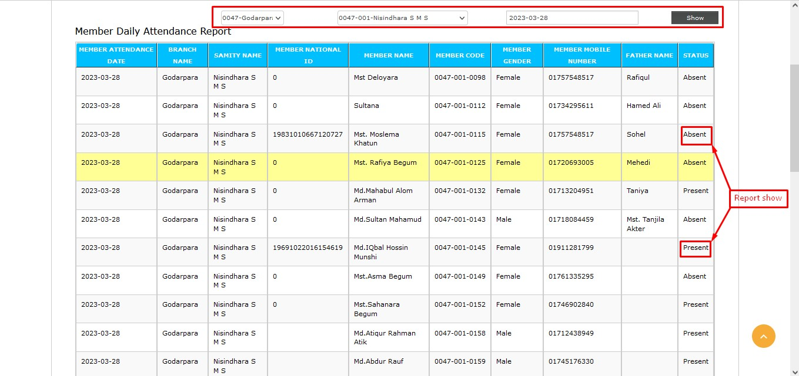 প্রয়োজনে Member Attendance Report গুলো আমরা প্রিন্ট করতে পারি।
মেম্বার পাস বুক সেল (Member Pass Book Sale) সফটওয়্যারে এন্ট্রির নিয়মাবলী
Member থেকে Member Pass Book Sale এ Click করলে আপনাকে Existing Member Pass Book Sale List টি দেখানো হবে।
চিত্রে পেইজটি দেখানো হলঃ

নতুন Member Pass Book Sale Add করার নিয়মঃ
আপনাকে Member Pass Book Sale থেকে Add বাটনে Click করতে হবে এবং Member Pass Book Sale নামের একটি Form Open হবে। তারপর সকল Field এর তথ্য সঠিক ভাবে Fillup করার পর Save বাটনে Click করলে নতুন Member Pass Book Sale টি Add হয়ে যাবে এবং সেটি আপনি Member Pass Book Sale List এ দেখতে পাবেন।
চিত্রে পেইজটি দেখানো হলঃ
Member Pass Book Sale Delete করার জন্য আপানাকে Member Pass Book Sale List থেকে কাঙ্ক্ষিত Member এর ডান দিকে Delete Button এ Click করতে হবে। তখন আপনাকে একটি নিশ্চিতকরণ মেসেজ দেখানো হবে, যেখানে আপনাকে জিজ্ঞাসা করা হবে “আপনি কি নিশ্চিত? এটি Delete করতে চান? আপনি এটি Delete করলে পুনরায় ফিরে পাবেন না!” এখন আপনি যদি নিশ্চিত হয়ে Delete করতে চান তাহলে Yes বাটনে Click করবেন। অন্যথায় No বাটনে Click করে আগের মেনুতে ফিরে আসবেন।
চিত্রে পেইজটি দেখানো হলঃ

সেভিংস (Savings) খোলার নিয়মাবলী
সেভিংস (Savings) মডিউলে মাউস পয়েন্টার নিলে ক্লিক করলে সেভিংস (Savings) অপশনটি দেখতে পাবো।
সেভিংস (Savings) অপশনে এ ক্লিক করার সাথে সাথে পূর্বে যে সকল মেম্বারের সেভিংস একাউন্ট খুলছে তাদের একটি তালিকা দেখতে পাবো
লিস্টের বাম পাশে উপরে কোনো নির্দিষ্ট তথ্য জানতে চাইলে প্রয়োজনীয় তথ্য দিয়ে সার্চ বাটন এ ক্লিক করলে সার্চ অনুযায়ী ফলাফল দেখতে পাবো।
লিস্ট থেকে চাইলে পূর্বে অ্যাড হওয়া তথ্য থেকে মেম্বার অনুযায়ী আলাদা আলাদা তথ্য দেখতে পাবো। লিস্টের ডান পাশে উপরে অ্যাড সেভিংস বাটন এ ক্লিক করলে একটি ফর্ম দেখতে পাবো। ফর্মে ব্রাঞ্চ নাম অটোমেটিক সিলেক্ট করা থাকবে। তারপর মেম্বার ফিল্ড থেকে যে মেম্বার নতুন সেভিংস একাউন্ট খুলতে চাই তার নাম সিলেক্ট করতে হবে। তারপর ঐ মেম্বার কি ধরণের সেভিংস একাউন্ট খুলতে চাই প্রোডাক্ট থেকে ঐ একাউন্ট সিলেক্ট করে দিবো।
প্রোডাক্ট যদি টিএসএস সিলেক্ট করি তাহলে ডিপোজিট টাইপ,ইন্টারেস্ট রেট(অর্থাৎ মেম্বার ঐ সেভিংস এর উপর কত পার্সেন্ট লাভ পাবে),সেভিং সাইকেল(অর্থাৎ,ঐ মেম্বার এর কততম সেভিং একাউন্ট এটা),সেভিং কোড,পিরিয়ড(অর্থাৎ,কত বছরের সেভিং একাউন্ট এটা),অটো প্রসেস এমাউন্ট থেকে কত টাকা করে মেম্বার জমা রাখবে ঐ টাকার পরিমাণ সিলেক্ট করে দিবে।
ওপেনিং ডেইট হচ্ছে যে তারিখে একাউন্ট খুলবে ঐ ডেইট অটোমেটিক নিয়ে নিবে। ম্যাচিউর ডেইট হচ্ছে মেম্বার কত বছরের জন্য একাউন্ট খুলছে তার উপর নির্ভর করে ডেইট নিয়ে নিবে। উদাহরণ হিসেবে বলা যায়, যদি ৫ বছরের একাউন্ট হয় এবং ওপেনিং ডেইট যদি ২০১৯-০৭-০১ হয় তাহলে ম্যাচিউর ডেইট হবে ২০২৪-০৬-০১। টোটাল ডিপোজিটে ৫ বছরে মোট কত টাকা জমা হবে তার পরিমাণ থাকবে।
পেয়েবল(payable)এমাউন্টে ইন্টারেস্ট এবং টোটাল ডিপোজিট একাউন্টের যোগফল বসবে। আবার যখন প্রোডাক্ট এমজিএস বা এমএসএস সিলেক্ট করবো তখন,পিরিয়ড,ম্যাচিউর ডেইট,টোটাল ডিপোজিট,পেয়েবল(payable) এমাউন্ট এই ফিল্ড গুলো থাকবে না যখন মেম্বার ক্লোজ হবে তখন এই আকাউন্ট গুলো ক্লোজ করতে পারবে।
সব ইনফরমেশন এন্ট্রি করার পর একবার চেক করে নিবো তারপর সেভ বাটন এ ক্লিক করবো।
সেভ হয়ে তা সেভিংস এর তথ্য লিস্ট এ চলে যাবে। এই ভাবেই শেষ করতে হবে সেভিংস ইনফরমেশন যোগ করার কাজ।
লিস্টের ডান পাশে ভিউ বাটন, যদি কোনো মেম্বারের সেভিংস ইনফরমেশন জানতে চাই তাহলে ভিউ বাটন এ ক্লিক করলে যাবতীয় ইনফরমেশন দেখতে পাবো।
ডিলিট বাটনে ক্লিক করে অপ্রয়োজনীয় তথ্য ডিলিট করতে পারি।
এবং কোনো তথ্য সংশোধন করার প্রয়োজন হলে এডিট বাটন এ ক্লিক পূর্বের মত একটি ফরম দেখতে পাবেন,উক্ত ফর্মে পূর্বের তথ্য প্রদর্শিত হবে। প্রয়োজন অনুসারে তথ্য পরিবর্তন করে Edit ফর্মের নিচে Save নামে একটি বাটন আছে ঐ বাটনে ক্লিক করলে পরিবর্তিত তথ্য সেভ হবে। পরিবর্তিত তথ্যসমূহ তথ্য টেবিলে দেখতে পাবো।
এইভাবে শেষ করতে হবে সেভিংস (Savings) এর কাজ।
সেভিংস ডিপোজিট (Savings Deposit) খোলার নিয়মাবলী
সেভিংস (Savings) মডিউলে মাউস পয়েন্টার নিলে সেভিংস ডিপোজিট(Savings Deposit) অপশনে ক্লিক করলে পূর্বের যোগ দেওয়া সকল মেম্বারদের সেভিংস ডিপোজিট(Savings Deposit) সংক্রান্ত তথ্য লিস্টে দেখতে পাবেন। সেখান থেকে প্রয়োজনে নির্দিষ্ট কোনো গ্রুপ বা কোনো মেম্বারের তথ্য ফিল্টার বা সার্চ করে দেখা যাবে। এবং ডান পাশ্বের অ্যাকশন কলামের ডিলিট বাটনে ক্লিক করে তথ্য ডিলিট করা যাবে। এবং কোনো ভুল থাকলে এডিট বাটনে ক্লিক করে তা সংশোধন করা যাবে।

আর ভিউ বাটনে ক্লিক করে ঐ মেম্বারের সেভিং ডিপোজিটের সম্পূর্ণ তথ্য দেখতে পাবে
নতুন কোনো ডিপোজিট অ্যাড করতে চাইলে অ্যাড বাটনে ক্লিক করতে হবে। তারপর একটি ফর্ম আসবে। সেখানে প্রথমে মেম্বার নেইম সিলেক্ট করতে হবে। তারপর সেভিং কোড সিলেক্ট করতে হবে। এবং কিভাবে পেমেন্ট করবে অর্থাৎ ক্যাশ না ব্যাংকে পেমেন্ট করবে তা সিলেক্ট করতে হবে। তারপর কত টাকা ডিপোজিট করবে সে এমাউন্ট টা লিখে সেইভ বাটনে ক্লিক করলে তথ্য গুলো সংরক্ষিত হবে। সংরক্ষিত তথ্যটি পূর্বের মতো লিস্টে দেখাবে
সেভিংস উইথড্র (Savings Withdraw) করার নিয়মাবলী
সেভিংস (Savings) মডিউলে মাউস পয়েন্টার নিলে সেভিংস উইথড্র (Savings Withdraw) অপশন টি দেখতে পাবো।
সেভিংস উইথড্র (Savings Withdraw) তে ক্লিক করার সাথে সাথে পূর্বে যে সকল মেম্বার এর সেভিংস উইথড্র করা হয়েছে তাদের তালিকা দেখা যাবে।
এখান থেকে আমরা মেম্বার এর তথ্য খুঁজে বের করতে পারবো।লিস্টের এর বাম পাশে উপরে প্রয়োজনীয় তথ্য দিয়ে সার্চ বাটন এ ক্লিক করলে কাঙ্খিত ফলাফল দেখতে পাবো।
লিস্টের এর ডান পাশের উপরে অ্যাড বাটন দেওয়া আছে।
অ্যাড বাটন এ ক্লিক করার সাথে সাথে একটি ফর্ম দেখতে পাবো।
প্রয়োজনীয় তথ্য দিয়ে ফর্ম পূরণ করবো। ফর্ম এ সেভিং কোড যখন সিলেক্ট করবো তখন ফর্মের ডান পাশে অটোমেটিক একটি লিস্ট জেনারেট হবে।
লিস্ট থেকে টোটাল ডিপোজিট,টোটাল উইথড্র এবং বর্তমান ব্যালেন্স জানা যাবে। জেনারেল সেভিংস একাউন্ট একটিভ থাকার জন্য ১০০টাকা একাউন্ট এ রেখে বাকি টাকা উইথড্র করতে পারবে। এরপর সব ইনফরমেশন ঠিক আছে কিনা চেক করে সেভ বাটন এ ক্লিক করবে।
অ্যাড করা ইনফরমেশন সরাসরি সেভিংস উইথড্র লিস্টে এ চলে যাবে।
কোন তথ্য যদি বাদ দিতে হয় তাহলে নিচের মতো ডিলিট বাটনে ক্লিক করতে হবে। তাহলে তথ্য মুছে যাবে।আবার যদি কোন তথ্য পরিবর্তন করার প্রয়োজন হয় তাহলে নিচের মতো করে এডিট বাটনে ক্লিক করুন।
ক্লিক করলে পূর্বের মত একটি ফর্ম দেখতে পাবেন,উক্ত ফর্মে পূর্বের তথ্য প্রদর্শিত হবে। প্রয়োজন অনুসারে তথ্য পরিবর্তন করে Edit ফর্মের নিচে Save নামে একটি বাটন আছে ঐ বাটনে ক্লিক করলে পরিবর্তিত তথ্য সেভ হবে
যদি একসাথে সব ইনফরমেশন দেখতে চাই তাহলে ভিউ বাটন এ ক্লিক করবো।
ভিউ বাটন এ ক্লিক করলে একটি লিস্ট আসবে ঐ লিস্টে এ সব ইনফরমেশন একসাথে দেখতে পাবো। এইভাবেই সেভিংস উইথড্র কাজ শেষ হবে।
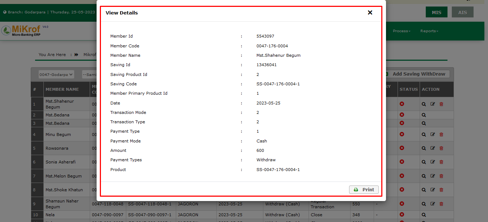সেভিংস ক্লোজিং (Savings Closing) করার নিয়মাবলী
সেভিং ক্লোজিং (Savings Closing) মানে হচ্ছে কোনো একটি মেম্বার এর সঞ্চয় বন্ধ করে দেওয়া।
প্রথমে সেভিংস (Savings) মডিউলে মাউস পয়েন্টার নিলে কত গুলো অপশন আসবে,ঐ খান থেকে সেভিং ক্লোজিং (Savings Closing) অপশনে এ ক্লিক করতে হবে।
সেভিং ক্লোজিং (Savings Closing) এ ক্লিক করার পরে একটি লিস্ট আসবে লিস্টের বাম দিকে একটি অ্যাড বাটন আসবে তার পরে উক্ত বাটনে ক্লিক করুন।
ক্লিক করার পরে নিচের মত করে একটি ফর্ম আসবে
এখন উক্ত ফর্মের সকল তথ্য সঠিক ভাবে পূরণ করতে হবে প্রথমে মেম্বার সিলেক্ট করে দিতে হবে তার পরে সেভিং কোড সিলেক্ট করতে হবে। তার পরে টোটাল সেভিং ইন্টারেস্ট কত টাকা হবে তা বলে দিতে হবে। তারপরে মোড অপ পেমেন্ট এর মধ্যে বলে দিতে হবে তা কি ক্যাশে হবে না ব্যাংকে হবে,যদি ব্যাংকে হয়ে থাকে তাহলে চেক নাম্বার আর ব্যাংক লিস্ট লাগবে আর যদি ক্যাশে দেওয়া হয় তাহলে কিছু করতে হয় না। তারপর সেইভ বাটনে ক্লিক করত হবে। ক্লিক করার পরে সকল তথ্য সমন্বিত একটি লিস্টে আসবে লিস্টের মধ্যে সকল তথ্য দেখা যাবে এবং যে সকল সেভিং একাউন্ট ক্লোজ হবে তা দেখা যাবে লিস্টে।
সেভিংস স্টেটাস (Savings Status) দেখার নিয়মাবলী
সেভিংস (Savings)মডিউলে মাউস পয়েন্টার নিলে সেভিংস স্টেটাস (Savings Status) এ ক্লিক করলে কিছু ইনপুট ফিল্ড আসবে। সেখান থেকে ফিল্টার বা সার্চ করে মেম্বারদের সঞ্চয়ের অবস্থা জানা যাবে।
গ্রুপ বা সমিতি সিলেক্ট করে সার্চ বাটনে ক্লিক করলে ঐ সমিতির সকল মেম্বারের সঞ্চয়ের অবস্থা জানা যাবে। অথবা আলাদা ভাবে নির্দিষ্ট কোনো মেম্বারের সঞ্চয়ের অবস্থা জানার জন্য মেম্বার আইডি তে মেম্বারের আইডি টাইপ করে সার্চ বাটনে ক্লিক করলে ঐ মেম্বারের সঞ্চয়ের অবস্থা জানা যাবে।
লিস্টের ডান পাশে ভিউ বাটনে ক্লিক করলে সেভিংস এর পুরো ডিটেলস দেখতে পাবে। কবে কবে সাভিংসে টাকা জমা পড়েছে তা জানা যাবে
সেভিংস ইন্টারেস্ট ক্যালকুলেশন (Savings Interest Calculation) সফটওয়্যারে এন্ট্রির নিয়মাবলী
Savings থেকে Savings Interest Calculation এ Click করলে আপনাকে Existing Savings Interest Calculation List টি দেখানো হবে।
চিত্রে পেইজটি দেখানো হলঃ
Savings Interest Calculation করার নিয়মঃ
আপনাকে Savings Interest Calculation Click করতে হবে তখন দিন ভিত্তিক সমিতি লিস্ট দেখানো হবে এবং আপনি প্রয়োজনানুসারে আপনার কাঙ্ক্ষিত সমিতির Auto/Manual Interest Button এ Click করলে একটি Form Open হবে। তারপর সকল Field এর তথ্য সঠিক ভাবে Fillup করার পর Save বাটনে Click করতে হবে।
চিত্রে পেইজটি দেখানো হলঃ

সেভিংস এডজাস্টমেন্টস (Saving Adjustments) সফটওয়্যারে এন্ট্রির নিয়মাবলী
Savings থেকে Saving Adjustments এ Click করলে আপনাকে Existing Saving Adjustments List টি দেখানো হবে।
চিত্রে পেইজটি দেখানো হলঃ
নতুন Savings Adjustment Add করার নিয়মঃ
আপনাকে Savings Adjustment থেকে Add বাটনে Click করতে হবে এবং Add Saving Adjustment নামের একটি Form Open হবে। তারপর সকল Field এর তথ্য সঠিক ভাবে Fillup করার পর Save বাটনে Click করলে নতুন Saving Adjustments টি Add হয়ে যাবে এবং সেটি আপনি Saving Adjustments List এ দেখতে পাবেন।
চিত্রে পেইজটি দেখানো হলঃ
Savings Adjustment Delete করার জন্য আপানাকে Savings Adjustment List থেকে কাঙ্ক্ষিত Member এর ডান দিকে Delete Button এ Click করতে হবে। তখন আপনাকে একটি নিশ্চিতকরণ মেসেজ দেখানো হবে, যেখানে আপনাকে জিজ্ঞাসা করা হবে “আপনি কি নিশ্চিত? এটি Delete করতে চান? আপনি এটি Delete করলে পুনরায় ফিরে পাবেন না!” এখন আপনি যদি নিশ্চিত হয়ে Delete করতে চান তাহলে Yes বাটনে Click করবেন। অন্যথায় No বাটনে Click করে আগের মেনুতে ফিরে আসবেন।
চিত্রে পেইজটি দেখানো হলঃ
রেগুলার লোন একাউন্ট (Regular Loan Account) খোলার নিয়মাবলী
প্রথমে লোন মডিউলে মাউস পয়েন্টার নিলে নিচের চিত্রের মতো অনেক গুলো অপশন থেকে রেগুলার লোন একাউন্ট (Regular Loan Account) অপসন এ ক্লিক করতে হবে।
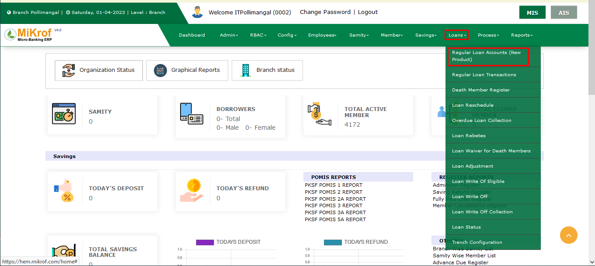তাহলে নিচের মতো একটি লিস্ট আসবে।
এখানে যেসব মেম্বাররা লোন নিয়েছে এবং যেসব মেম্বারের লোন অনুমোদন হয়েছে তার তালিকা দেখা যাবে। এর পর এই পেজের উপরের ডান পাশে অ্যাড রেগুলার লোন একাউন্ট (Regular Loan Account) বাটনে ক্লিক করলে নিচের মতো একটি ফর্ম আসবে।
এই ফরমটি অনেকগুলো অপশান বা হেডলাইন দ্বারা বিভক্ত। মেম্বার ফর্ম এর প্রথম ভাগ হচ্ছে মেম্বার এন্ড লোন ডিটেইলস এবং লোন কনফিগারেশান। এখানে মেম্বার এন্ড লোন ডিটেইলসের প্রথম ফিল্ডটি হচ্ছে ব্রাঞ্চের নেইম। এখানে কোন ব্রাঞ্চের মেম্বার কে লোন দেওয়া হবে তার নাম লিখতে হবে। এখানে কোন মেম্বারকে লোন দেওয়া হবে মেম্বারের নাম সেট করতে হবে। তারপরের ফিল্ড হচ্ছে ডিসবার্সমেন্ট তারিখ। যা ডিফল্ট সেট থাকবে অর্থাৎ যে তারিখে লোন দেওয়া হবে। তারপরের ফিল্ড হচ্ছে প্রোডাক্ট। এখানে কোন টাইপের লোন দেওয়া হবে তা লিখতে হবে। এর পরের ফিল্ডটি পূরণ হয়ে যাবে। তারপরের ফিল্ড গুলো হচ্ছে লোন কনফিগারেশানের। এর প্রথম ফিল্ড হচ্ছে লোন এপ্লিকেশান নাম্বার। এখানে লোন এপ্লিকেশান ফর্মের নাম্বারটি লিখতে হবে। তারপরের ফিল্ড হচ্ছে রিপেমেন্ট ফ্রিকোয়েন্সি। লোন এর ইন্সটলমেন্ট গুলো কত দিন পর পর দিবে তা এখানে লিখতে হবে। তারপরের ফিল্ডটি নিজে নিজে পূরণ হয়ে যাবে যখন নং অফ রিপেমেন্ট ফিল্ডটি পূরণ করা হবে। লোন সাইকেল ফিল্ডটি হচ্ছে ঐ মেম্বারটি মোট কতটি লোন নিয়েছে তার সংখ্যা। লোন এমাউন্ট যেখানে কত লোন দেওয়া হবে তা লিখতে হবে। নং অফ রিপেমেন্ট হচ্ছে মোট কতটি ইন্সটলমেন্ট দিতে হবে তা লিখতে হবে। ইনসুরেন্স এমাউন্টা নিজে নিজে সেট হয়ে যাবে। লোন Purpose হচ্ছে কি জন্য লোন নিচ্ছে তা লিখতে হবে এখানে। ফলিও নাম্বার ফিল্ড হচ্ছে এখানে ফলিও নাম্বারটা লিখতে হবে। তারপরের নিচের ফর্ম টি ক্যাটাগরি হচ্ছে লোন ক্যালকুলেশান এখানকার ফিল্ডগুলো নিজে নিজে পূরণ হয়ে যাবে।
শুধুমাত্র ইন্টারেস্ট ডিসকাউন্ট ফিল্ডটি পূরণ করতে হবে যদি লোনের উপর কোন ডিসকাউন্ট দেওয়া হয়। তারপরের পেমেন্ট অপশনের মধ্যে টোটাল রিপে এমাউন্ট এবং ইন্টারেস্ট এমাউন্ট নিজে নিজে সেট হয়ে যাবে। ইন্সটলমেন্ট এমাউন্ট যদি রাউন্ড ফিগার না হয় তাহলে রাউন্ড ফিগার করে পূরণ করে দিতে হবে। তারপরের ফিল্ড হচ্ছে পেমেন্ট টাইপ যা সিলেক্ট করে দিতে হবে। তারপরের ধাপ হচ্ছে এক্সট্রা লোন ইনফরমেশন। এখানকার সবগুলো ফিল্ড নিজে নিজে পূরণ হয়ে যাবে শুধমাত্র নোট ফিল্ড ছাড়া। ফিল্ডটি পূরণ করতে হবে। তারপরের নিচের চিত্রে বাকি ধাপ গুলো দেওয়া আছে।
গ্যারান্টর ডিটেইলস এর মধ্যে গ্যারান্টর নাম, গ্যারান্টরের সাথে সম্পর্ক, গ্যারান্টরের ঠিকানা এবং যোগাযোগের ডিটেইলস লিখতে হবে। তারপর হচ্ছে এমপ্লয়মেন্ট রিলেটেড ইনফরমেশন যা হ্যা বা না সিলেক্ট করে দিতে হবে। তারপরের ধাপ গুলো হচ্ছে ফেমেলি এমপ্লয়মেন্ট এবং আউটসাইড ফেমেলি এমপ্লয়মেন্ট এখানে ফেমেলির সদস্যদের কাজের তথ্য উল্লেখ করতে হয় যে কত জন পুরুষ এবং কত জন মহিলা কি কি কাজে জড়িত তা লিখতে হয় এভাবে। সকল তথ্য পূরণ হলে নিচের চিত্রের মতো সেভ বাটনে ক্লিক করে তথ্য সমূহ সংরক্ষন করতে হয়।
তথ্য সংরক্ষিত হলে তা লিস্টে দেখাবে। এখানে রেগুলার লোন একাউন্ট(Regular Loan Account) অথোরাইজড না হওয়া পর্যন্ত তথ্য সমূহ নিচের চিত্রের মতো এডিট বাটনে ক্লিক করে পরিবর্তন বা এডিট করা যাবে।
আবার অথোরাইজড হওয়া পর্যন্ত তথ্য সমূহ ইচ্ছে করলে ডিলিট করা যাবে নিচের চিত্রের মতো ডিলিট বাটনে ক্লিক করে।
আর কোন তথ্য যদি একবার অথোরাইজড হয়ে যায় তাহলে তা নিচের চিত্রের মতো আর এডিট বা ডিলিট করা যাবে না।
আবার অনেক গুলো তথ্য হতে কোন তথ্য খুজে বের করতে হলে সার্চ ফিল্ডে নির্দিষ্ট কীওয়ার্ড লিখে নিচের মতো সার্চ বাটনে ক্লিক করলে ঐ যদি থাকে তাহলে নিচে চলে আসবে।
এভাবেই কোন মেম্বার কে লোন দিতে হলে তার তথ্য এবং লোন সংক্রান্ত সকল তথ্য লিখে রেগুলার লোন একাউন্ট (Regular Loan Account) খুলতে হয় এবং অথোরাইজড হওয়ার আগ পর্যন্ত ডিলিট এবং আপডেট করা যাবে। কিন্তু একবার অথোরাইজড হয়ে গেলে ঐ তথ্য পরিবর্তন বা ডিলিট করা যাবে না।
বিঃদ্রঃ কোন মেম্বারের আগের লোন নেওয়া থাকলে এবং তা সম্পূর্ন পরিশোধ করা না হলে নতুন লোন নেওয়া যাবে না।
মেম্বারের লোন সংক্রান্ত ও লোন সিডিউল সংক্রান্ত সকল তথ্য দেখার নিয়মাবলী
প্রথমে নিচের মতো লোন নামক মডিউলে মাউস পয়েন্টার নিলে রেগুলার লোন একাউন্ট নামক মডিউলে অপশন আসবে। অপশনে ক্লিক করতে হবে।
তাহলে নিচের চিত্রের মতো সকল মেম্বারদের লোন একাউন্ট সম্বলিত একটি লিস্ট আসবে।
এখানে মেম্বারদের লোন একাউন্ট গুলো দেখা যাবে।
এখন নিচের চিত্রের মতো সার্চ অপশান এবং বাটনের সাহায্যে কোন নির্দিষ্ট মেম্বারকে খুজে বের করা যাবে।
এরপর যে মেম্বাররে লোন সংক্রান্ত সকল তথ্য দেখা প্রয়োজন তা নিচের চিত্রের মতো করে নির্দিষ্ট বাটনে ক্লিক করতে হবে।

তারপর নিচের মেম্বারের লোন ডিটেইলস পেজটি আসবে।
এখানে মেম্বারের লোন সংক্রান্ত সকল তথ্যকে দুইটি অংশে বিভক্ত করা হয়েছে।
লোন সংক্রান্ত তথ্য পেজের প্রথম অংশটি হচ্ছে মেম্বার ইনফরমেশন এবং লোন ইনফরমেশন যা নিচের চিত্রে দেওয়া হয়েছে।
এখানে লোনের সকল তথ্য, মেম্বারের নাম ঠিকানা, ব্রাঞ্চ ইনফরমেশন, ইন্টারেস্ট ও ইনস্টলমেন্টের সকল তথ্য দেখা যাবে। তার পরের অংশটি নিচের চিত্রে দেওয়া হলো।
এখানে ঐ মেম্বারের লোন ইনস্টলমেন্টের তারিখ, ইনস্টলমেন্ট এমাউন্ট, প্রিন্সিপাল এমাউন্ট, ইন্টারেস্ট এমাউন্ট, ট্রানজাকশন এবং ট্রানজাকশন স্ট্যাটাস দেখা যাবে। যদি প্রতি তারিখে সঠিক ভাবে ইনস্টলমেন্ট পরিশোধ করে তাহলে পেইড নামক স্ট্যাটাস আসবে। যদি অগ্রিম টাকা পরিশোধ করে তাহলে এডভান্সড নামক স্ট্যাটাস আসবে। আর যদি টাকা বাকি থাকে তাহলে ডিউ স্ট্যাটাস হবে। যদি ইনস্টলমেন্ট সিডিউল না আসে তাহলে রিসিডিউল নামক স্ট্যাটাস আসবে। এবং নিচে সবকিছুর টোটাল ভেল্যু দেখা যাবে।
রেগুলার লোন ট্রানজেকশন (Regular Loan Transaction) এর কাজ সম্পূর্ণ করার নিয়মাবলী
লোন (Loan) মডিউলে মাউস পয়েন্টার নিলে রেগুলার লোন ট্রানজেকশন অপশনটি (Regular Loan Transaction) টি দেখতে পাবো।
রেগুলার লোন ট্রানজেকশন (Regular Loan Transaction) এ ক্লিক করার সাথে সাথে পূর্বে যেসকল মেম্বারের লোন ট্রানজেকশন হয়েছে তার একটি তালিকা দেখতে পাবো।
নির্দিষ্ট লোন ট্রানজেকশন খুঁজে বের করার জন্য আমরা সার্চ করতে পারি।
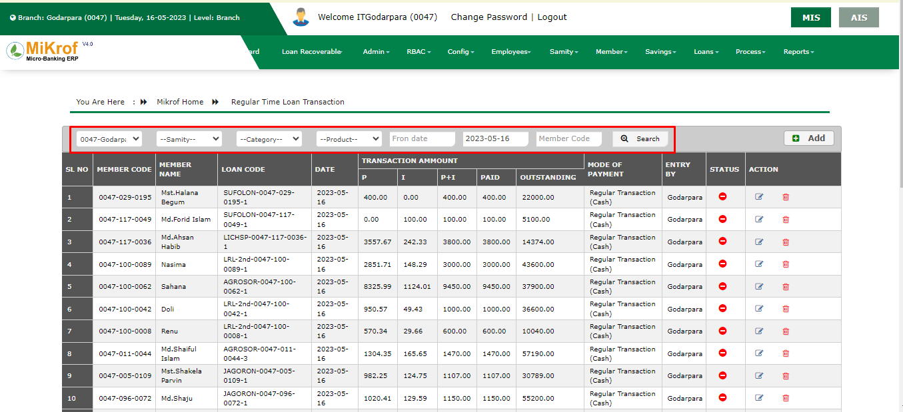লিস্টের এর ডান পাশের উপরে অ্যাড বাটন দেওয়া আছে। অ্যাড বাটন এ ক্লিক করার সাথে সাথে একটি ফর্ম দেখতে পাবো।
প্রয়োজনীয় তথ্য দিয়ে ফর্ম পূরণ করবো। লোন সিলেক্ট করার সাথে সাথে অটোমেটিক একটি লিস্ট জেনারেট হবে ফর্মের ডান পাশে। কত টাকা লোন এবং কত টাকা অ্যাডভান্স করা হয়েছে এই লিস্টে থেকে দেখতে পাবো।
এরপর সব ইনফরমেশন ঠিক আছে কিনা চেক করে সেভ বাটন এ ক্লিক করুন।
অ্যাড করা ইনফরমেশন সরাসরি রেগুলার লোন ট্রানজেকশন লিস্ট এ চলে যাবে। যদি কোন তথ্য বাদ দিতে হয়। তাহলে ডিলিট বাটন এ ক্লিক করলে ডিলিট অপারেশন সম্পূর্ণ হবে।
অথবা তা এডিট করে নিবো,এডিট বাটন এ ক্লিক করলে একটি ফর্ম দেখতে পাবেন। উক্ত ফর্মে পূর্বের তথ্য প্রদর্শিত হবে। প্রয়োজন অনুসারে তথ্য পরিবর্তন করে Edit ফর্মের নিচে Save নামের বাটন ক্লিক করলে পরিবর্তিত তথ্য সেভ হবে।
এইভাবে রেগুলার লোন ট্রানজেকশন শেষ করতে হবে
ডেথ মেম্বার রেজিস্টার (Death Member Register) নিয়ে কাজ করার নিয়মাবলী
Death Member হচ্ছে কোন একটি সমিতির Member মারা যাওয়ার পরে তা রেজিস্টার করা। কিভাবে Death Member Register এ যাবেন তা নিচে ছবির মাধ্যমে দেখানো হলো.
Death Member Register Click করার পর একটা লিস্ট দেখতে পাবো।
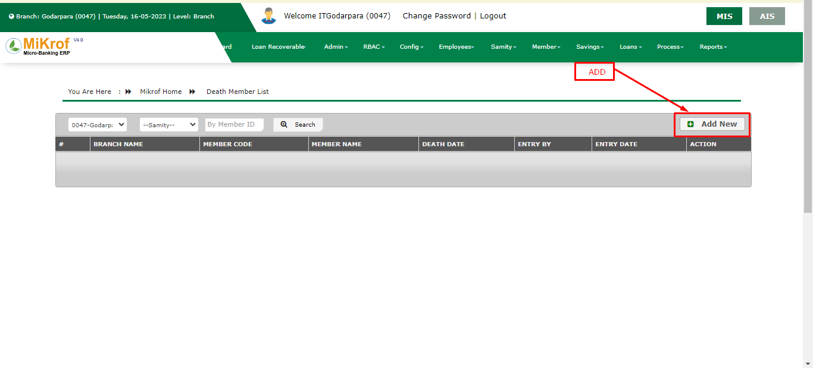এর ডান পাশের উপরে Add নামে একটা বাটন আছে উক্ত বাটনে ক্লিক করলে আমরা Death Member Register ফর্ম এ আসবো।
অতঃপর এই ফর্ম এর মধ্যে আমাদেরকে ব্রাঞ্চ নাম ও মেম্বার নাম এবং মেম্বার এর মারা যাওয়ার তারিখ সিলেক্ট করতে হবে। তারপর Schedule এবং Transaction Stop করে উপরের Save বাটন ক্লিক করতে হবে।
Data Table a Edit ও Delete নামে দুইটা বাটন আছে, Edit বাটন দিয়ে কোন Death Member তথ্য পরিবর্তন করতে পারব এবং Delete বাটন দিয়ে আমরা Death Member এর তথ্য মুছে পেলতে পারব নিচে চিত্রে দেখানো হল। যদি আমরা Death Member Data Table থেকে কোন মেম্বার এর তথ্য প্রয়োজন হয় তাহলে আমরা উক্ত লিস্ট থেকে বক্স গুলো পূরণ করে সার্চ বাটনে ক্লিক করতে হবে।
লোন রি-শিডিউল (Loan Reschedule)
Loans থেকে Loan Reschedule এ Click করলে আপনাকে Existing Loan Reschedule List টি দেখানো হবে।
চিত্রে পেইজটি দেখানো হলঃ

Loan Reschedule Delete করার জন্য আপানাকে Loan Reschedule List থেকে কাঙ্ক্ষিত Member এর ডান দিকে Delete Button এ Click করতে হবে। তখন আপনাকে একটি নিশ্চিতকরণ মেসেজ দেখানো হবে, যেখানে আপনাকে জিজ্ঞাসা করা হবে “আপনি কি নিশ্চিত? এটি Delete করতে চান? আপনি এটি Delete করলে পুনরায় ফিরে পাবেন না!” এখন আপনি যদি নিশ্চিত হয়ে Delete করতে চান তাহলে Yes বাটনে Click করবেন। অন্যথায় No বাটনে Click করে আগের মেনুতে ফিরে আসবেন।
চিত্রে পেইজটি দেখানো হলঃ
ওভারডিউ লোন কালেকশন (Overdue Loan Collection) করার নিয়মাবলী
লোন(Loan) মডিউলে মাউস পয়েন্টার নিলে ওভারডিউ লোন কালেকশন (OverDue Loan Collection) অপশনটি টি দেখতে পাবো।
ওভারডিউ লোন কালেকশন (OverDue Loan Collection) অপশনে এ ক্লিক করার সাথে সাথে পূর্বে যাদের বকেয়া ওভারডিউ তে চলে আসছে তাদের একটা তালিকা দেখা যাবে।
লিস্টের বাম পাশে উপরে কোনো নির্দিষ্ট তথ্য জানতে চাইলে প্রয়োজনীয় তথ্য দিয়ে সার্চ বাটন এ ক্লিক করলে সার্চ অনুযায়ী তথ্য দেখতে পাবো।

Overdue Loan Collection থেকে যদি কোন Overdue মেম্বারের লোন পরিশোধ করতে চাই তাহলে Action কলাম থেকে Add New Transaction ক্লিক করব।
ক্লিক করলে আমাদেরকে এই ফর্মে নিয়ে আসবে এ ফর্মটা পূরণ করে Save বাটন Click করে overdue মেম্বারের Loan ট্রানজেকশন আমরা করতে পারি।

কিভাবে লোন রিবেটস (Loan Rebate) দিবো
যদি কোন সদস্য Outstanding এর টাকা মেয়াদ উত্তীর্ন হওয়ার পূর্বে,ইন্সটলমেন্টের টাকা অগ্রিম প্রদানের মাধ্যমে ঋণ পরিশোধ করলে উক্ত সময় শুধুমাত্র সার্ভিস চার্জের উপর থেকে যে পরিমাণ টাকা ছাড় দেওয়া হয়,সেটাই হলো লোন রিবেটস(Loan Rebate)।
Loan Rebate এর লোন মডিউল থেকে লোন রিবেটস(Loan Rebate) ফিচার এ ক্লিক করতে হবে।
Loan মডিউল এর Loan Rebate এ ক্লিক করার পর একটি লিস্ট প্রদর্শিত হবে।
উক্ত লিস্টে কোন কোন সদস্যদের ঋণের সার্ভিস চার্জ ছাড় দেওয়া হয়েছে তাদের তথ্য দেখা যাবে ।
আর যদি নতুন কোন সদস্যের ঋণের সার্ভিস চার্জ ছাড় দেওয়ার প্রয়োজন হয়,তা হলে লিস্টের ADD বাটনে ক্লিক করতে হবে।
Add বাটনে ক্লিক করার পর একটি ফর্ম আসবে।
উক্ত ফর্মে ব্রাঞ্চ এর নাম সফটওয়্যার কর্তৃক সিলেক্ট করা থাকে। এরপর সদস্য নির্ধারন করতে হবে,সদস্য নির্ধারন করার পর লোনের আইডি ঠিক করতে হবে। লোন আইডি সিলেক্ট করলে সদস্যের লোনের সার্ভিস চার্জ আসবে এরপর সদস্যকে সার্ভিস চার্জের উপর কত টাকা ছাড় দিবে তা Rebates Amount এ লিখতে হবে।
সদস্যের নাম এবং লোন আইডি সিলেক্ট করার পর ফর্মে ডান পাশে একটি লিস্ট প্রদর্শিত হয়,যেখানে উক্ত সদস্যের ঋণের আর্থিক লেনদেনের সকল তথ্য দেখানো হয়।
ফর্ম পূরণ করে Save বাটনে ক্লিক করে তথ্য সংরক্ষণ করতে হবে।
Save করা তথ্য Loan Rebate লিস্টে যুক্ত হয়। Loan Rebete লিস্ট থেকে নির্দিষ্ট কোন সদস্যের তথ্য জানতে চাইলে প্রয়োজনীয় তথ্য দিয়ে সার্চ বাটন এ ক্লিক করলে ঐ তথ্য প্রর্দশিত হবে ।
তথ্য বাদ দিয়ে দিতে চাইলে লিস্ট এর ডান সাইডে অ্যাকশন লেখার নিচে যে লাল বাটন বা ডিলিট এর আইকন আছে ঐ বাটন এ ক্লিক করলে ডিলিট অপারেশন সম্পন্ন হবে।
তথ্য অ্যাড করার সময় যদি কোনো ভুল হয়ে থাকে তাহলে তা এডিট করবো। ডিলিট বাটন এর পাশেই এডিট বাটন ঐ বাটনে ক্লিক করলে পূর্বের মত একটি ফর্ম দেখতে পাবেন,উক্ত ফর্মে পূর্বের তথ্য প্রদর্শিত হবে। প্রয়োজন অনুসারে তথ্য পরিবর্তন করে Edit ফর্মের নিচে Save নামে একটি বাটন আছে ঐ বাটনে ক্লিক করলে পরিবর্তিত তথ্য সেভ হবে।
ডেথ মেম্বারদেরকে লোন ওয়েভার (Loan Waiver for Death Members) দেওয়ার নিয়মাবলী
Loan অপশনে মাউস পয়েন্টার রেখে Loan Waiver For Death Member অপশনে ক্লিক করতে হবে। Loan Waiver For Death Member হচ্ছে কোন ঋণকৃত ব্যাক্তি যদি তার সম্পূর্ন লোন পরিশোধের এর পূর্বে মারা যায় তবে তার প্রকৃত বা সম্ভাব্য ঋণ ক্ষমা করা।
Loan Waiver For Death Member এ ক্লিক করার পর একটি লিস্ট প্রদর্শিত লিস্টে যেসব মেম্বারদের প্রকৃত বা সাম্ভাব্য ঋণ ক্ষমা করা হয়,সেই সব সদস্যদের তথ্য জমা থাকে।
লিস্টের ডান পাশে উপরে ও নিচে Add বাটন থাকে। Add বাটনে ক্লিক করার পর একটি ফর্ম আসবে। ফর্মে Current Branch সফটওয়্যার কর্তৃক সেট করা থাকে। এরপর যে মেম্বারের ঋণ ক্ষমা করতে হবে সে Member Name নির্বাচন করতে হবে। মেম্বার সেট করার পর সদস্যের Loan Id নির্বাচন করতে হবে।
Loan Id নির্বাচন করার পর ডান পাশে মেম্বারের ঋণের সকল তথ্য প্রদর্শিত হবে। উক্ত লিস্টে মেম্বার কত টাকা ঋণ নেওয়া হয়েছে,কতটাকা জমা দেওয়া হয়েছে এবং কত টাকা বাকি আছে তার সম্পর্কে জানা যায়।
তারপর Waber type এ কি পরিমাণ ক্ষমা করা হবে, পুরা নাকি আংশিক তা সেট করতে হবে। যদি পুরো টাকা ক্ষমা করতে চায় তবে full সেট করতে হবে
এবং যদি কিছুটাকা ক্ষমা করা হয় তাহলে partial সেট করে Waver Amount এ টাকার পরিমাণ লিখতে হবে।
এরপর সেভ বাটনে ক্লিক করে মেম্বারের তথ্য লিস্টে জমা করা হয়।
কোন নির্দিষ্ট ব্যক্তির তথ্য দেখতে চাইলে লোন কোড বা মেম্বারের নাম লিখে সার্চ বাটনে ক্লিক করে ঐ ব্যক্তির তথ্য দেখা যায়।
লোন অ্যাডজাস্টমেন্ট (Loan Adjustment) করার নিয়মাবলী
লোন অ্যাডজাস্টমেন্ট(Loan Adjustment) হচ্ছে যেখান থেকে মেম্বাররা তাদের সেভিং বা ডিপোজিটকৃত টাকা থেকে তাদের লোন পরিশোধ করতে পারেন। লোন(Loan) মডিউলে মাউস পয়েন্টার রেখে লোন অ্যাডজাস্টমেন্ট এ ক্লিক করলে লোন অ্যাডজাস্টমেন্ট (Loan Adjustment) এর সকল ট্রানজাকশন এর একটি লিস্ট আসবে। ডান পাশের ভিউ বাটনে ক্লিক করে পুরো ট্রানজাকশন ডিটেইলস দেখতে পারবে।
অ্যাড লোন অ্যাডজাস্টমেন্ট করতে চাইলে অ্যাড বাটনে ক্লিক করলে একটি ফর্ম আসবে। সেখান থেকে মেম্বার নেইম সিলেক্ট কর সেভিং আইডি সিলেক্ট করলে ঐ সেভিং একাউন্ট এর যাবতীয় ইনফরমেশন (যেমনঃTOTAL DEPOSIT, TOTAL WITHDRAW, ACTUAL BALANCE) ডান পাশে শো করবে। এবং লোন আইডি সিলেক্ট করলে লোন ইনফরমেশন দেখাবে। এবং সব শেষে সেভ বাটনে ক্লিক করলে ট্রানজাকশন সম্পন্ন হবে।

রাইট অফ যোগ্য (Loan Write Of Eligible) মেম্বারদের লিস্ট দেখার নিয়মাবলী
যে সকল সদস্য এর ঋণ মেয়াদত্তীর্ণ হয়েছে অর্থাৎ Overdue হওয়ার পরও পরবর্তীতে একটি নির্দিষ্ট সময় (যেমন ১ বছর)-এর মধ্যে উক্ত টাকা যদি আর আদায় করা সম্ভব না হয় সেক্ষেত্রে উক্ত সময় অতিক্রম হওয়ার সাথে সাথে সফটওয়্যার ঐ সকল সদস্যদেরকে Write Off Eligible List এর মধ্যে নিয়ে আসে।
Write Off Eligible List এর মধ্যে ঐসকল সদস্যদের সকল তথ্য প্রদর্শন করবে যেমন Loan code এবং Member code এবং Member name এবং Total principle due ammount, Total service charge due ammount ইত্যাদি।
নিচের চিত্রের মত একটি ফর্ম আসবে নির্দিষ্ট করে দেওয়া জায়গায় ক্লিক করুন।
উক্ত বাটনে ক্লিক করার পরে একটি ফর্ম আসবে, এই ফর্ম এর মধ্যে লোন মেম্বার আইডি,মেম্বার আইডি দেওয়া থাকবে তার পরে রিজন অফ নামক ফিল্ড এর মধ্যে ইয়েস অর নো নামে দুইটি অপশন থাকবে। যদি ব্যাক্তি জীবিত হয় তাহলে নো হবে আর যদি মৃত হয় তাহলে ইয়েস হবে। তার পরের ফিল্ড হচ্ছে নোট,কি কারনে টাকা পরিশোধ করেনি তার জন্য একটি নোট লিখতে হবে তার পরে সেইভ বাটনে ক্লিক করতে হবে,সেইভ বাটনে ক্লিক করলে রাইট অপ ইলিজিবল এর তথ্য জমা হবে

এবং Member Write off হবে Principle Loan Outstanding এবং Service Charge Rebete হবে যা Software নিজে যোগ করবে।
লোন রাইট অফ (Loan Write Off) এর নিয়মাবলী
লোন(Loan) মডিউলে মাউস পয়েন্টার নিলে লোন রাইট অফ(Loan Write Off) অপশনটি দেখতে পাবো।
লোন রাইট অফ(Loan Write Off) হচ্ছে যাদের অনেকদিনের লোন এর পূর্বের ওভারডিউ বাকি আছে এবং এই টাকা পাওয়ার কোনো সম্ভাবনা নেই তাদের মূল টাকা এবং ইন্টারেস্টের টাকা সহ হিসাব ক্লোজ করার একটা প্রক্রিয়া।
রাইট অফ এ ক্লিক করার সাথে সাথে রাইট অফ এলিজিবল থেকে যাদের কে অনুমোদিত করা হয়েছে তাদের একটা লিস্ট আসবে।

লিস্টের বাম পাশে উপরে কোনো নির্দিষ্ট তথ্য জানতে চাইলে প্রয়োজনীয় তথ্য দিয়ে সার্চ বাটন এ ক্লিক করলে ফলাফল দেখতে পাবো।
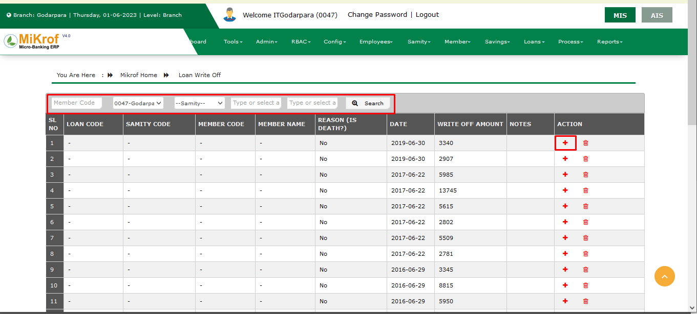লিস্টে থেকে প্লাস যে বাটন আছে ঐ বাটন এ ক্লিক করলে একটা ফর্ম দেখতে পাবো।
তারপর কারেন্ট আউটস্ট্যান্ডিং এর সাথে এমাউন্ট ফিল্ড এ টাকা সমান আছে কিনা তা দেখে নিবো তারপর যে কারণে রাইট অফ করছি নোট এ উল্লেখ করে দিবো।
তারপর সেভ বাটন এ ক্লিক করলে রাইট অফ এর কাজ শেষ
লোন রাইট অফ মেম্বারদের (Loan Write Off Collection) লিস্ট দেখার নিয়মাবলী
লোন অপশনের লোন রাইট অফ কালেকশানে ক্লিক করলে একটি লিস্ট প্রর্দশিত হয়। উক্ত লিস্টে যে সকল মেম্বারদের ঋণ মওকুফ করা হয়েছে তাদের তথ্য জমা থাকে।
যে সদস্যের ঋণ মওকুফ করা হয়েছে সে সদস্যের নাম,সমিতি কোড থাকবে। আর সদস্যের ঋণ কেন মওকুফ করা হয়েছে তার কারন নোটে লেখা থাকে,এবং কত তারিখে কি পরিমাণ টাকা মওকুফ করা হয়ছে তা দেখা যাবে।
লোন স্টেটাস (Loan Status) তথ্য দেখার নিয়মাবলী
Loans মডিউলে মাউস পয়েন্টার রাখলে এর ভিতর Loan status নামে একটি অপশন আছে। যেখানে সমিতির অধীনস্ত কোন সদস্যের লোনের লেনদেন সম্পর্কিত সকল তথ্য জমা থাকে এবং প্রয়োজনে তথ্য যাচাই করা যায়।
Loan status এ ক্লিক করলে একটি লিস্ট প্রদর্শিত হবে। উক্ত লিস্টে সদস্যাদের ব্রাঞ্চ এর নাম,সমিতির নাম,লোন এর ধরন,ইন্টারেস্ট এবং তারিখ সিলেক্ট করে Search বাটনে ক্লিক করে সদস্যদের লোন সম্পর্কিত তথ্য যাচাই করা যায়।
এবং চাইলে কোন নির্দিষ্ট সদস্যের লোন এর স্ট্যটাস যাচাই করা যায়। সে ক্ষেত্রে সমিতির নাম,লোনের ধরন এবং মেম্বার কোড লিখে উক্ত সদস্যের লোন সম্পর্কির তথ্য যাচাই করা যায়।
Search বাটনে ক্লিক করার পর লোন স্ট্যটাস লিস্টে প্রদর্শিত হবে।
Loan status লিস্টে একটি Action কলামে একটি আইকন আছে। উক্ত সার্চ আইকনে ক্লিক করে কোন সদস্যের লোনের লেনদেন সম্পর্কিত তথ্য জমা থাকে, অর্থাৎ সদস্য কত তারিখে কত লোনের কত টাকা পরিশোধ করেছে,এবং কোন মাসের টাকা বাকি আছে কিনা তা যাচাই করা যায়।
যদি সদস্য কোন মাসের কিংবা কোন সপ্তাহের টাকা বাকি থাকে তাহলে লেখা লাল রঙের হবে এবং উক্ত মাসের বা সপ্তাহের টাকা পরের মাসের বা সপ্তাহের সাথে যোগ হয়ে যাবে।
আর যদি কোন মাসের বা সপ্তাহের টাকা পরিশোধ করে থাকে তহলে ADVANCE কলামের লেখা থাকবে অর্থাৎ উক্ত সদস্যের ঐ মাসের বা সপ্তাহের কোন টাকা বাকি নাই।
একসাথে সম্পূর্ণ সমিতির তথ্য এন্ট্রি দেওয়ার নিয়মাবলী
অটো প্রসেসে (Auto Process) হচ্ছে এমন একটি প্রসেস যেখান হতে কোন সমিতির সকল সদস্যের একসাথে হাজিরা এবং একসাথে কিস্তি বা ইনস্টলমেন্ট সহ সেভিংস বা সঞ্চয়ের টাকা ও একসাথে জমা নেওয়া যায়। নিচে অটো প্রসেস দেখানো হলো। প্রথমে প্রসেস নামক মডিউলে মাউস পয়েন্টার রাখলে নিচের মতো কতগুলো অপশান আসে।
এখান হতে অটো প্রসেস (Auto Process) নামক অপশন ক্লিক করতে হবে। তাহলে নিচের চিত্রের মতো একটি লিস্ট আসবে যেখানে একটি ব্রাঞ্চের মধ্যে যত সমিতি আছে সবগুলো লিস্ট আকারে আসবে।
এখান হতে যে সমিতির মেম্বারদের টাকা জমা নেওয়া হবে তার পাশের নিচের চিত্রের মতো দেখানো বাটনে ক্লিক করতে হবে।
তাহলে নিচের চিত্রের মতো সমিতিরে মেম্বারদের তথ্য, তাদের লোন এবং সেভিংস সম্পর্কিত তথ্য সমূহ দেখা যাবে।
যা তিন ভাগে ভাগ করা। প্রথম ভাগ বা অংশ হচ্ছে মেম্বর ইনফরমেশন এখানে সমিতির মেম্বারদের মেম্বার আইডি, মেম্বার নাম এবং মেম্বারের পিতার নাম বা তাদের স্বামী বা স্ত্রীর নাম উল্লেখ করা থাকবে। এবং এর পাশে হাজিরার অপশান থাকবে। যদি কোন মেম্বার অনুপস্থিত থাকে তাহলে তার হাজিরার অপশান কে আনচেক করে দিতে হবে।
তার পরের অংশ হচ্ছে লোন ইনফরমেশন। যা নিচের চিত্রে দেখানো হয়েছে।
এখানে একজন মেম্বারের যে যে লোন চালু আছে এবং যার চলতি সময়ের লোন ইন্সটলমেন্ট বা কিস্তি দেওয়ার আছে তার ইনফরমেশন আসবে। যদি চলতি কিস্তি দেওয়া হয়ে থাকে তাহলে কোন তথ্য দেখাবে না এখানে। এখন যাদের লোন ইনফরমেশন আসছে তাদের ইনস্টলমেন্ট দিতে হলে প্রথমে চিত্রের মতো করে সবগুলো বক্স আনচেক করে দিতে হবে। তাহলে চিত্রের মতো এমাউন্ট এর সকল খালি জায়গায় 0 দেখা যাবে। এরপর নিচের চিত্রের মতো যে Member ইনস্টলমেন্ট বা কিস্তি নেওয়া হবে তার ফুল(FULL) নামক কলামের বক্সে চেক দিতে হবে।
তাহলে চিত্রের মতো ইন্সটলমেন্টরে যা এমাউন্ট থাকে তা এমাউন্ট নামক ফিল্ডে চলে আসে। অর্থাৎ মেম্বার যখন ফুল ইন্সটলমেন্ট পরিশোধ করে তথন এই বক্সে চেক দেওয়া হবে। আবার যদি কোন মেম্বার তার কিস্তির সম্পূর্ন টাকা দিতে না পারে এবং কিস্তির টাকা থেকে কম দিতে চায় তখন নিচের তথ্যের মতো পারশিয়াল নামক বক্সে চেক দিতে হবে তা হলে এমাউন্ট নামক ফিল্ডটি লেখার মতো অবস্থায় আসবে।
এবং এখানে এমাউন্টা লিখে দিতে হবে। আবার কেউ যদি কোন কিস্তি বা ইন্সটলমেন্ট না দেয় তখন তার এমাউন্ট নামক ফিল্ডটি 0.00 এই অবস্থায় রাখতে হবে। তবে কোন অবস্থায় ব্লাংক বা খালি রাখা যাবে না। এভাবে সব গুলো মেম্বারের লোন ইনফরমেশন লিখতে হবে।
এরপরের অংশ হচ্ছে সেভিংস বা সঞ্চয়ের ইনফরমেশন। যা নিচে চিত্রের মধ্যে দেখানো হলো।
এখানে ঠিক আগের অংশের মতোই ধাপ গুলো অনুসরন করতে হবে। প্রথমে সবগুলো চেক বক্স আনচেক করতে হবে। এবং সবগুলো এমাউন্ট বক্সে 0.00 এই লেখা আসবে। এখন যে মেম্বার সঞ্চয়ের ফুল(FUll) টাকা দিবে তার ফুল চেক বক্সে চেক দিতে হবে। এবং যে পুরো টাকা দিবে না তার পারশিয়াল নামক চেক বক্সে চেক দিতে হবে। আবার যদি কোন মেম্বার কোন টাকাই জমা না দেয় তখন সবগুলো চেক বক্স আনচেক করতে হবে। এবং অবশ্যই এমাউন্ট ফিল্ড 0.00 হতে হবে এবং খালি হতে পারবে না।
এভাবে সবগুলো মেম্বারের তথ্য, তাদের লোনের তথ্য এবং তাদের সঞ্চয়ের তথ্য সমূহ পূরণ করা হবে তখন নিচের চিত্রের মতো প্রিভিউ নামক বাটনে ক্লিক করতে হবে।
তাহলে নিচের চিত্রের মতো প্রিভিউ বাটনটি সেভ নামক বাটনে পরিণত হবে এবং এতে ক্লিক করতে হবে।

তাহলে যেসব মেম্বারদের তথ্য পূরণ করে সেভ করা হয়েছে তাদের তথ্য সমূহ নিচের চিত্রের মতো চলে আসবে।
অর্থাৎ এই সমিতি ডে তাদের লেনদেন সম্পূর্ন হয়েছে।
এখন যাদের লোন বা ঋণ এবং সঞ্চয়ের টাকা পরিশোধ করা হয়েছে তা দেখতে হলে নিচের চিত্রের মতো অটো প্রসেস অপশানে ক্লিক করলে যে পেজ আসে ঐ পেজে চিত্রের দেখানো বাটনে ক্লিক করতে হবে।
ক্লিক করার পর নিচের চিত্রের মতো পেজে যেসব মেম্বারদের লেনদেন সম্পূর্ন করা হয়েছে তা দেখা যাবে।
অর্থাৎ যেসব মেম্বারদের ঋণ এবং সঞ্চয়ের টাকা পরিশোধ করা হয়েছে শুধু মাত্র তাদের তথ্য সমূহ দেখা যাবে এখানে। এবং যাদের লেনদেন সম্পূর্ন করা হয়নি তাদের তথ্য দেখা যাবে না। এখন যেসব মেম্বারের লেনদেনে সমস্যা হইছে তাদের লেনদেন এখান হতে এডিট করা যাবে
এভাবেই অটো প্রসেসের মাধ্যমে সমিতি ডে তে সমিতির সদস্যদের হাজিরা, ঋণ এর কিস্তি এবং সঞ্চয়ের টাকা একসাথে পরিশোধ করা যায়।
ট্রানজাকশন অথোরাইজেশন (Transaction Authorization) করার নিয়মাবলী
ট্রানজাকশন অথোরাইজেশন (Transaction Authorization) হচ্ছে এমন একটি প্রসেস যখন কোন সমিতির সকল লেনদেন বা সমিতির মেম্বার বা ঐ মেম্বারের কোন লেনদেনকে অথোরাইজেশন বা অনুমোদিত করা।
প্রথমে প্রসেস নামক মডিউল থেকে ট্রানজাকশন অথোরাইজেশন নামক সাব মডিউলকে নিচের চিত্রের মতো ক্লিক করতে হবে।
তাহলে নিচের চিত্রের মতো একটি লিস্ট আসবে।
এখানে যেসব সমিতির দৈনিক লেনদেন অথোরাইজড করা হয় নাই তাদের তালিকা দেখা যাবে। এরপর নিচের চিত্রের মতো অথোরাইজেশন নামক বাটনে ক্লিক করে প্রত্যেকটি সমিতির দৈনিক লেনদেন অথোরাইজড করা যাবে।
অথবা অল নামক অথোরাইজেশন বাটনে ক্লিক করে সব গুলো সমিতিকে একসাথে অথোরাইজড করা যাবে। কোন সমিতিকে অথোরাইজড করা হলে তা নিচের চিত্রের মতো আন-অথোরাইজড নামক লিস্টে চলে যাবে।
এখন যদি কোন সমিতির কোন মেম্বারকে অথোরাইজড করতে হয় তাহলে তা নিচের মতো বাটনে ক্লিক করে সমিতির মেম্বার পেজ নিয়ে আসতে হবে।
এখন নিচের চিত্রের মতো অথোরাইজেশন নামক বাটনে ক্লিক করে প্রত্যেক মেম্বারকে আলাদা আলাদা অথোরাইজড করা যাবে।
অথবা অল অথোরাইজেশন নামক বাটনে ক্লিক করে প্রত্যেক মেম্বারকে একসাথে অথোরাইজড করা যাবে। আবার শুধু মাত্র কোন মেম্বাররের দৈনিক লেনদেন গুলোকে আলাদা করে অথোরাইজড করতে হলে নিচের চিত্রের মতো বাটনে ক্লিক করে মেম্বারের লেনদেন সংক্রান্ত পেজে যেতে হবে।
এখান থেকে নিচের চিত্রের মতো বাটনে ক্লিক করে মেম্বারের লেনদেন গুলোকে আলাদা আলাদা অথোরাইজড করা যাবে।
আবার নিচের চিত্রের মতো ট্রানজাকশন অথোরাইজেশন নামক পেজের মধ্যে সার্চের মাধ্যমে যে কোন সমিতিকে খুজে নেওয়া যায়।
ট্রানজাকশন আন-অথোরাইজেশন (Transaction Unauthorization) করার নিয়মাবলী
ট্রানজাকশন আন-অথোরাইজেশন (Transaction Unauthorization) হচ্ছে এমন একটি প্রসেস যখন কোন সমিতির সকল লেনদেন বা সমিতির মেম্বার বা ঐ মেম্বারের কোন লেনদেনকে আন-অথোরাইজেশন করা।
প্রথমে প্রসেস (Process) নামক মডিউল থেকে ট্রানজাকশন আন-অথোরাইজেশন (Transaction Unauthorization) নামক সাব মডিউলকে নিচের চিত্রের মতো ক্লিক করতে হবে।
তাহলে নিচের চিত্রের মতো একটি লিস্ট আসবে।
এখানে যেসব সমিতির দৈনিক লেনদেন অথোরাইজড করা হয়েছে তাদের তালিকা দেখা যাবে। এরপর নিচের চিত্রের মতো আন- অথোরাইজেশন নামক বাটনে ক্লিক করে প্রত্যেকটি সমিতির দৈনিক লেনদেন আন-অথোরাইজড করা যাবে।
অথবা All নামক আন-অথোরাইজেশন বাটনে ক্লিক করে সব গুলো সমিতিকে একসাথে আন-অথোরাইজড করা যাবে। এখন যদি কোন সমিতির কোন মেম্বারকে আন-অথোরাইজড করতে হয় তাহলে তা নিচের মতো বাটনে ক্লিক করে সমিতির মেম্বার পেজ নিয়ে আসতে হবে।
এখন নিচের চিত্রের মতো আন-অথোরাইজেশন নামক বাটনে ক্লিক করে প্রত্যেক মেম্বারকে আলাদা আলাদা আন- অথোরাইজড করা যাবে।
অথবা All আন-অথোরাইজেশন নামক বাটনে ক্লিক করে প্রত্যেক মেম্বারকে একসাথে আন- অথোরাইজড করা যাবে। আবার শুধু মাত্র কোন মেম্বারের দৈনিক লেনদেন গুলোকে আলাদা করে আন-অথোরাইজড করতে হলে নিচের চিত্রের মতো বাটনে ক্লিক করে মেম্বারের লেনদেন সংক্রান্ত পেজে যেতে হবে।
এখান থেকে নিচের চিত্রের মতো বাটনে ক্লিক করে মেম্বারের লেনদেন গুলোকে আলাদা আলাদা আন-অথোরাইজড করা যাবে।
আবার নিচের চিত্রের মতো ট্রানজাকশন আন-অথোরাইজেশন নামক পেইজ এ সার্চের মাধ্যমে যেকোন সমিতিকে খুজে নেওয়া যায়।
ডে ইন্ড প্রসেস (Day End Process) করার নিয়মাবলী
প্রসেস (Process) অপশনে মাউস পয়েন্টার রেখে Day End Process এ ক্লিক করতে হবে। Day End Process ক্লিক করার পর Previous Day End List আসে লিস্টে ব্রাঞ্চ Date এবং Action থাকে।

লিস্টের উপরে ডানে Execute Day End Process নামের একটি Button আছে।
এরপর Day End Procees ক্লিক করে উক্ত তারিখের হিসাব লিপিবদ্ধ করতে হবে। সেক্ষেত্রে উক্ত তারিখের সকল লেনদেন অনুমোদিত থাকতে হবে। যদি উক্ত দিনের কোন একটি লেনদেন অনুমোদিত না হয় তবে Day End Process সম্পূর্ন হবে না। Day End Process ক্ষেত্রে অবশ্যই উক্ত দিনের সকল লেনদেন অনুমোদিত থাকতে হবে
মানথ ইন্ড প্রসেস (Month End Process) করার নিয়মাবলী
প্রসেস (Process) এ মাউস পয়েন্টার রেখে মানথ ইন্ড প্রসেস এ ক্লিক করলে সকল ইন্ড মানথ এর একটি লিস্ট আসবে। কোনো মাসের সমস্ত ট্রানজাকশন অর্থাৎ সফটওয়্যারের সকল কাজ শেষ করার পর মানথ ইন্ড করতে হয়। নতুন কোনো মানথ ইন্ড করতে চাইলে নিউ মানথ ইন্ড এ ক্লিক করতে হবে।
সেখান ব্রাঞ্চ সিলেক্ট করে মানথ ইন্ড প্রসেস এ ক্লিক করলে মানথ ইন্ড প্রসেস সম্পন্ন করতে হবে। এর জন্য অবশ্যই সকল ধরণের ট্রানজাকশন অথোরাইজড হতে হবে। যদি অথোরাইজড করা না থাকে তাহলে আনঅথোরাইজড সকল ট্রানজাকশন অথোরাইজড করতে হবে।
সফটওয়্যারে পাসবুক ব্যালেন্স (Passbook Balance) করার নিয়মাবলী
প্রসেস(Procees) মডিউলে মাউস পয়েন্টার নিলে পাসবুক ব্যালেন্স(Passbook Balance) অপশনটি দেখতে পাবো।
পাসবুক ব্যালেন্স ফিচার টিতে ক্লিক করলে একটি লিস্ট দেখতে পাবো।
লিস্ট থেকে যতক্ষণ না গ্রুপ সিলেক্ট করা হবে ততক্ষণ অ্যাড বাটনে click করা যাবে না।
গ্রুপ সিলেক্ট করার পর কোন মাসের তথ্য এন্ট্রি দিবো ঐ মাস সিলেক্ট করতে হবে। তারপর ইয়ার সিলেক্ট করে অ্যাড বাটন এ ক্লিক করবে।
অ্যাড বাটন এ ক্লিক করলে সাথে সাথে একটি তালিকা দেখতে পাবো।
এখান থেকে প্রয়োজনীয় তথ্য দিয়ে সেভ বাটন এ ক্লিক করবে। সেভ বাটন এ ক্লিক করার সাথে সাথে তা পাস বুক ব্যালেন্স লিস্টে চলে যাবে।
কোনো তথ্য যদি ভুল হয় তাহলে তা ডিলিট করে পুনরায় অ্যাড করবো। অথবা ডিলিট না করে এডিট করে নিতে পারি,এডিট বাটন এ ক্লিক করলে পূর্বের মত একটি ফর্ম দেখতে পাবেন,উক্ত ফর্মে পূর্বের তথ্য প্রদর্শিত হবে। প্রয়োজন অনুসারে তথ্য পরিবর্তন করে Edit ফর্মের নিচে Save নামে একটি বাটন আছে ঐ বাটনে ক্লিক করলে পরিবর্তিত তথ্য সেভ হবে।
মান্থলি টার্গেটস (Monthly Targets) সফটওয়্যারে এন্ট্রির নিয়মাবলী
Process থেকে Monthly Targets তে Click করলে আপনাকে Existing Monthly Targets List টি দেখানো হবে।
চিত্রে পেইজটি দেখানো হলঃ
নতুন Monthly Target Add করার নিয়মঃ
আপনাকে Monthly Target থেকে Add বাটনে Click করতে হবে এবং Add Monthly Targets নামের একটি Form Open হবে। তারপর সকল Field এর তথ্য সঠিক ভাবে Fillup করার পর Save বাটনে Click করলে নতুন Monthly Targets টি Add হয়ে যাবে এবং সেটি আপনি Monthly Targets List এ দেখতে পাবেন।
চিত্রে পেইজটি দেখানো হলঃ
Existing Monthly Target Edit করার জন্য আপানাকে Monthly Target List থেকে কাঙ্ক্ষিত Target Title এর ডান দিকে Edit Button (পেন্সিলের মতো) এ Click করতে হবে। তখন পূর্বের তথ্যাবলী সহ Edit Monthly Targets নামের একটি Form Open হবে। প্রয়োজনীয় তথ্যাদি Correction করার পর Save বাটনে Click করলে সংশোধিত Monthly Target টি Monthly Target List এ দেখতে পাবেন।
Existing Monthly Target Delete করার জন্য আপানাকে Monthly Target List থেকে কাঙ্ক্ষিত Target Title এর ডান দিকে Delete Button এ Click করতে হবে। তখন আপনাকে একটি নিশ্চিতকরণ মেসেজ দেখানো হবে, যেখানে আপনাকে জিজ্ঞাসা করা হবে “আপনি কি নিশ্চিত? এটি Delete করতে চান? আপনি এটি Delete করলে পুনরায় ফিরে পাবেন না!” এখন আপনি যদি নিশ্চিত হয়ে Delete করতে চান তাহলে Yes বাটনে Click করবেন। অন্যথায় No বাটনে Click করে আগের মেনুতে ফিরে আসবেন।
চিত্রে পেইজটি দেখানো হলঃ
Monthly Target Set করার নিয়মঃ
Monthly Target Set করার জন্য আপানাকে Monthly Target List থেকে কাঙ্ক্ষিত Target Title এর ডান দিকে Plus Button (যোগ চিহ্নের মতো) এ Click করতে হবে। তখন Monthly Target Details নামের একটি Form Open হবে। তারপর সকল Field এর তথ্য সঠিক ভাবে Fillup করার পর Save বাটনে Click করলে নতুন Monthly Target টি Set হয়ে যাবে।
চিত্রে পেইজটি দেখানো হলঃ
রি-কভারেবলস (Recoverables):
Process থেকে Recoverables তে Click করলে আপনাকে Existing Recoverables List টি দেখানো হবে।
চিত্রে পেইজটি দেখানো হলঃ

Existing Recoverables Delete করার জন্য আপানাকে Recoverables List থেকে কাঙ্ক্ষিত Member এর ডান দিকে Delete Button এ Click করতে হবে। তখন আপনাকে একটি নিশ্চিতকরণ মেসেজ দেখানো হবে, যেখানে আপনাকে জিজ্ঞাসা করা হবে “আপনি কি নিশ্চিত? এটি Delete করতে চান? আপনি এটি Delete করলে পুনরায় ফিরে পাবেন না!” এখন আপনি যদি নিশ্চিত হয়ে Delete করতে চান তাহলে Yes বাটনে Click করবেন। অন্যথায় No বাটনে Click করে আগের মেনুতে ফিরে আসবেন।
চিত্রে পেইজটি দেখানো হলঃ
রিপোর্ট
একটি প্রতিষ্ঠানের রিপোর্ট সমূহকে ভিন্ন ভিন্ন ভাগে ভাগ করা হয়ে থাকে নিম্নে রিপোর্ট সমূহ আলচনা করা হল:
1 PKSF-POMIS Reports 2 MRA Reports (Microcredit Regulatory Authority) 2.1 MRA Reports 2.2 MRA NBD Reports 3 Regular and General Report (Branch Level) 4.1 Register Report(branch level) 5 Consolidated Report 6 Schedule Defaulter 7 Branch Wise Samity List 8 Samity Wise Member List 9 Today's Loan Disbursment Report 10 Member Migration Balance 13 Advance Due Register 17 Pass Book Balancing Register Report 13 Regular 18 Monthly Report 21 MIS and AIS Cross Check Report 22 Periodical Progress Report
পরিশেষে আমরা বলতে পারি যে আমাদের সফটওয়্যারটি ব্যবহারের ফলে তথ্যগুলো যেমন সুসংগঠিত অবস্থায় থাকবে এবং ভুল ভ্ৰান্তি সনাক্ত হবে তেমনি,দ্রততার সাথে কালেকশনশিট প্রিন্ট লেজার কর্মীদের সাপ্তাহিক রিপোর্ট সীটে সদস্যদের নাম, ট্রান্সপার,মাসিক রিপোর্ট সহ বহুবিদি সুবিধা পাওয়া যাবে এছাড়াও (পিকেএসএফ)ও (এম আর এ)এর চাহিদা অনুযায়ী সকল ধরণের রিপোর্ট সহ রিয়েল টাইম তথ্য সঠিক ভাবে পাওয়া যাবে এবং তথ্য গুলো সমন্বিত করা সম্ভব হবে ফলশূতিতে হ্মুদ্রঋণ কার্যক্রমে নিয়োজিত প্রতিষ্ঠানসমূহের সুশাসন ও শৃঙ্খলা প্রতিষ্ঠিত হবে
চার্ট অফ একাউন্ট (Chart Of Account) খোলার নিয়মাবলী
চার্ট অ্যাকাউন্টস টাইপ হলো সমস্ত Asset, Liability, Equity, Revenue, and Expense। এটির একটি তালিকা নিচে দেওয়া হল। Chart of Account চার্টে অন্তর্ভুক্ত অ্যাকাউন্টের সংখ্যা কোম্পানির Chart of Account আকারের উপর নির্ভর করে।
নিচের চিত্র অনুসারে Chart of Account গুলোকে ভাগ করা হয়েছে
নিম্নলিখিত ASSET অ্যাকাউন্টের উদাহরণ:
নিম্নলিখিত LIABILITY অ্যাকাউন্টের উদাহরণ:
নিম্নলিখিত REVENUE (INCOME) অ্যাকাউন্টের উদাহরণ:
নিম্নলিখিত EXPENSE অ্যাকাউন্টের উদাহরণ:
চার্ট অ্যাকাউন্টস এর নিয়মঃ
অটো ভাউচার কনফিগারেশন (Auto Voucher Configuration) নিয়মাবলী
অটো ভাউচার কনফিগারেশন (Auto Voucher Configuration) এর কাজ হলো MIS পার্টের বিভিন্ন প্রোডাক্ট এর সাথে AIS পার্টের একাউন্ট হেড এর সংযুক্ত করা। যেমন এটি মুলত MIS এর সকল তথ্যগুলো কিভাবে AIS পাওয়া যাবে তাহার পূর্ব রুপরেখা বলে দেওয়া। AIS এর অটো ভাউচার (Auto Voucher) এ ডাটা পেতে হলে AIS এর Auto Voucher Configuration কনফিগারেশন এ Ledger Account হেড এর কোড অনুযায়ী Loan Primary Product এবং Principal Code,Service Charge Code,Risk Insurance Code,Loan From Fee,Admissions Fee,Loan Write Of Code,AIS Saving Code,Service Interest Code এবং Debit_account (cash code) ফিল্ড গুলো পূরণ করতে হবে
ওপেনিং ব্যালেন্স (Opening Balance) এন্ট্রির নিয়মাবলী
AIS(Accounting Infromation System) এর কনফিগারেশন অপশনে গিয়ে ওপেনিং ব্যালেন্সে এ ক্লিক করার পর একটি ফর্ম আসে,যেখানে ব্রাঞ্চের Software Start Date এর পূর্বের লেনদেন সমূহের ব্যালান্স গুলো Posting দিতে হবে।
সফটওয়্যার মাইগ্রেশন করার সময় ব্রাঞ্চের পূর্বের ব্যালেন্স সফটওয়্যারে এন্ট্রি করাকে বলে ওপেনিং ব্যালেন্স। এটি ব্রাঞ্চের রিপোর্টের রিসিভ ও পেমেন্ট পার্টের For This Month,For This Period,Upto This Month অনুযায়ী এই ফরম এন্ট্রি করে সেভ বাটন এ ক্লিক করে ওপেনিং ব্যালান্স এন্ট্রি সফটওয়্যার এ এন্ট্রি করা হয়।
Note:Expense এর জন্য Payment Part। Income এর জন্য Receive Part
রিসিভ ভাউচার (Receipt Voucher) এন্ট্রির নিয়মাবলী
রিসিভ ভাউচারের মাধমে ব্যাংক এবং ক্যাশ(Cash) এর সকল প্রকার টাকা গ্রহন করা হয়। প্রথমে ভাউচারে মেনুতে মাউস পয়েন্টার নিলে কত গুলো অপশন আসবে ঐ অপশন থেকে রিসিভ ভাউচারে সিলেক্ট করে ক্লিক করতে হবে।
ক্লিক করলে নিচের মতো একটা ফরম ওপেন হবে।এবার নিচের চিত্র অনুযায়ী ভাউচার ফরম এর ফিল্ড গুলো পূরণ করতে হবে।

Receipt Voucher এর এন্ট্রি দেওয়ার জন্য Funding Organization ফিল্ডটি সঠিকভাবে সিলেক্ট করতে হবে। Voucher Date এবং Voucher Code অটো সিলেক্ট করা থাকবে। ডেবিট একাউন্ট থেকে ডেবিট হিসাব,ক্রেডিট একাউন্ট থেকে ক্রেডিট হিসাবটি সিলেক্ট করতে হবে। তারপর ট্রানজাকশন এমাউন্ট লিখতে হবে। একাধিক ট্রানজাকশন একসাথে করতে চাইলে অ্যাড বাটনে ক্লিক করে নতুন ট্রানজাকশন অ্যাড করতে হবে।
তারপর Narration/Cheque Details এ হিসাবের শর্ট ডেসক্রিপশন এবং Global Narration এ হিসাবের Narration লিখতে হবে। তারপর সেইভ বাটনে ক্লিক করলে ভাউচারটি Save হবে।
কন্ট্রা ভাউচার (Contra Voucher) এন্ট্রির নিয়মাবলী
Contra Voucher হচ্ছে ব্যাংক ও ক্যাশ লেনদেন সমূহ। প্রথমে ভাউচারে মেনুতে মাউস পয়েন্টার নিলে কত গুলো অপশন আসবে ঐ অপশন থেকে Contra ভাউচারে সিলেক্ট করে ক্লিক করতে হবে।
ক্লিক করলে নিচের মতো একটা ফরম ওপেন হবে। এবার নিচের চিত্র অনুযায়ী ভাউচার ফরম এর ফিল্ড গুলো পূরণ করতে হবে।

Contra Voucher এর এন্ট্রি দেওয়ার জন্য Funding Organization ফিল্ডটি সঠিকভাবে সিলেক্ট করতে হবে। Voucher Date এবং Voucher Code অটো সিলেক্ট করা থাকবে। ডেবিট একাউন্ট থেকে ডেবিট হিসাব,ক্রেডিট একাউন্ট থেকে ক্রেডিট হিসাবটি সিলেক্ট করতে হবে। তারপর ট্রানজাকশন এমাউন্ট লিখতে হবে। একাধিক ট্রানজাকশন একসাথে করতে চাইলে অ্যাড বাটনে ক্লিক করে নতুন ট্রানজাকশন অ্যাড করতে হবে।
তারপর Narration/Cheque Details এ হিসাবের শর্ট ডেসক্রিপশন এবং Global Narration এ হিসাবের Narration লিখতে হবে। তারপর সেইভ বাটনে ক্লিক করলে ভাউচারটি Save হবে।
Bank এ টাকা জমা দেওয়ার ক্ষেত্রে Contra Voucher এন্ট্রি দেওয়ার নিয়মাবলী:
Bank এ টাকা জমা দেওয়ার ক্ষেত্রে: Contra Voucher
Example Entry: ধরুন 10000 টাকা Bank এ জমা দেয়া হলো। নিচে Voucher অনুসারে Entry দিতে হবে।
Bank এ টাকা উত্তোলনের ক্ষেত্রে Contra Voucher এন্ট্রি দেওয়ার নিয়মাবলী:
Bank এ টাকা উত্তোলনের ক্ষেত্রে:Contra Voucher
Example Entry: ধরুন 10000 টাকা Bank থেকে উত্তোলন। নিচে Voucher অনুসারে Entry দিতে হবে।
নগদে পণ্য বিক্রির ক্ষেত্রে Contra Voucher এন্ট্রি দেওয়ার নিয়মাবলী:
নগদে পণ্য বিক্রির ক্ষেত্রে: Contra Voucher
Example Entry: ধরুন 10000 টাকা নগদে পণ্য বিতরণ। নিচে Voucher অনুসারে Entry দিতে হবে।
পেমেন্ট ভাউচার (Payment Voucher) এন্ট্রির নিয়মাবলী
পেমেন্ট ভাউচারের মাধমে ব্যাংক এবং ক্যাশ(Cash) থেকে সকল প্রকার Payment করা হয়। প্রথমে ভাউচার মেনুতে মাউস পয়েন্টার নিলে কত গুলো অপশন আসবে ঐ অপশন থেকে পেমেন্ট ভাউচারে সিলেক্ট করে ক্লিক করতে হবে।

ক্লিক করলে নিচের মতো একটা ফরম ওপেন হবে। এবার নিচের চিত্র অনুযায়ী ভাউচার ফরম এর ফিল্ড গুলো পূরণ করতে হবে।
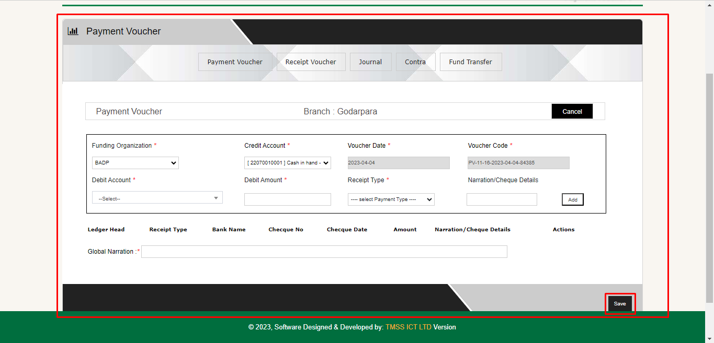Payment Voucher এর ক্ষেত্রে এন্ট্রি দেওয়ার জন্য Funding Organization ফিল্ডটি সঠিকভাবে সিলেক্ট করতে হবে। Voucher Date এবং Voucher Code অটো সিলেক্ট করা থাকবে। ডেবিট একাউন্ট থেকে ডেবিট হিসাব টি সিলেক্ট করতে হবে। ক্রেডিট একাউন্ট থেকে ক্রেডিট হিসাবটি সিলেক্ট করতে হবে। তারপর এমাউন্ট এ ট্রানজাকশন এমাউন্ট লিখতে হবে। একাধিক ট্রানজাকশন একসাথে করতে চাইলে অ্যাড বাটনে ক্লিক করে ট্রানজাকশন অ্যাড করতে হবে।
তারপর Narration/Cheque Details এ হিসাবের শর্ট ডেসক্রিপশন এবং Global Narration এ হিসাবের Narration লিখতে হবে। তারপর সেইভ বাটনে ক্লিক করলে ভাউচারটি Save হবে।
বেতন প্রদানের ক্ষেত্রে Payment Voucher এন্ট্রি দেওয়ার নিয়মাবলী:
বেতন প্রদানের ক্ষেত্রে: Payment Voucher
Example Entry: ধরুন 10000 টাকা বেতন প্রদান করা হলো । নিচে Voucher অনুসারে Entry দিতে হবে।
জার্নাল ভাউচার (Journal Voucher) এন্ট্রির নিয়মাবলী
যাবতীয় অনার্থিক (Non-Cash) লেনদেন গুলো জার্নাল ভাউচার থেকে এন্ট্রি দিতে হবে। যেমনঃ ভুল সংশোধন, প্রভিশন, অগ্রিম ইত্যাদির জন্য জার্নাল ভাউচার ব্যবহার করা হয়।
Journal Voucher এর এন্ট্রি দেওয়ার জন্য Funding Organization ফিল্ডটি সঠিকভাবে সিলেক্ট করতে হবে। Voucher Date এবং Voucher Code অটো সিলেক্ট করা থাকবে। ডেবিট একাউন্ট থেকে ডেবিট হিসাব,ক্রেডিট একাউন্ট থেকে ক্রেডিট হিসাবটি সিলেক্ট করতে হবে। তারপর ট্রানজাকশন এমাউন্ট লিখতে হবে। একাধিক ট্রানজাকশন একসাথে করতে চাইলে অ্যাড বাটনে ক্লিক করে নতুন ট্রানজাকশন অ্যাড করতে হবে।

তারপর Narration/Cheque Details এ হিসাবের শর্ট ডেসক্রিপশন এবং Global Narration এ হিসাবের Narration লিখতে হবে। তারপর সেইভ বাটনে ক্লিক করলে ভাউচারটি Save হবে।
বেতন বাবদ কর্তন টাকার ক্ষেত্রে Journal Voucher এন্ট্রি দেওয়ার নিয়মাবলী:
বেতন বাবদ কর্তন টাকার ক্ষেত্রে: Journal Voucher
Example Entry: ধরুন 10000 টাকা বেতন বাবদ কর্তন করা হলো । নিচে Voucher অনুসারে Entry দিতে হবে।
আবাসন বাবদ কর্তন টাকার ক্ষেত্রে Journal Voucher এন্ট্রি দেওয়ার নিয়মাবলী:
আবাসন বাবদ কর্তন টাকার ক্ষেত্রে: Journal Voucher
Example Entry: ধরুন 10000 টাকা আবাসন বাবদ কর্তন করা হলো । নিচে Vouchar টি Entry দিয়ে দেখানো হলো।
TSS provision এর ক্ষেত্রে Journal Voucher এন্ট্রি দেওয়ার নিয়মাবলী:
TSS provision এর ক্ষেত্রে: Journal Voucher
Example Entry: ধরুন এই বছর 10000 টাকা TSS provision হলো। নিচে Voucher অনুসারে Entry দিতে হবে।
শাখায় Write Off হলে এক্ষেত্রে Journal Voucher এন্ট্রি দেওয়ার নিয়মাবলী :
শাখায় Write Off হলে সেটা Journal Vourcher এর মাধ্যমে Entry হবে।

Example Entry: ধরুন এই বছর 10000 টাকা Write Off হলো। নিচে Voucher অনুসারে Entry দিতে হবে।
ফান্ড ট্রান্সফার (Fund Transfer) ভাউচার এন্ট্রির নিয়মাবলী
ফান্ড ট্রান্সফার ভাউচারের মাধ্যমে একটি ব্রাঞ্চ থেকে অন্য একটি ব্রাঞ্চের,হেড অফিস থেকে ব্রাঞ্চে,ব্রাঞ্চ থেকে হেড অফিসে ফান্ড আদান প্রদান করা হয়। প্রথমে ভাউচারে মেনুতে মাউস পয়েন্টার নিলে কত গুলো অপশন আসবে ঐ অপশন থেকে রিসিভ ভাউচারে সিলেক্ট করে ক্লিক করতে হবে।
ক্লিক করলে নিচের মতো একটা ফরম ওপেন হবে এর সকল ফিল্ড গুলো পূরণ করতে হবে।
Fund Transfer এন্ট্রি দেওয়ার জন্য Funding Organization ফিল্ডটি সঠিকভাবে সিলেক্ট করতে হবে। Voucher Date এবং Voucher Code অটো সিলেক্ট করা থাকবে। ডেবিট একাউন্ট থেকে ডেবিট হিসাব,ক্রেডিট একাউন্ট থেকে ক্রেডিট হিসাবটি সিলেক্ট করতে হবে। তারপর ট্রানজাকশন এমাউন্ট লিখতে হবে। একাধিক ট্রানজাকশন একসাথে করতে চাইলে অ্যাড বাটনে ক্লিক করে নতুন ট্রানজাকশন অ্যাড করতে হবে।
তারপর Narration/Cheque Details এ যেই ব্রাঞ্চ বা শাখাকে প্রদান করা হবে তার নাম শর্ট ডেসক্রিপশনে এবং Global Narration এ একাধিক Narration লিখতে হবে। তারপর সেইভ বাটনে ক্লিক করলে ভাউচারটি Save হবে।
Fo কার্যালয় থেকে শাখায় ফান্ড প্রাপ্তি হলে এক্ষেত্রে Fund Transafer Voucher এন্ট্রি দেওয়ার নিয়মাবলী:
Fo কার্যালয় থেকে শাখায় ফান্ড প্রাপ্তি হলে: Fund Transafer Voucher
Fo কার্যালয় থেকে শাখায় ফান্ড প্রাপ্তি হলে Fund Transafer Voucher Voucher Entry হবে।
Debit= 15411/Bank 14904
Credit=Fund Payable Fo(24001)
Example Entry: ধরুন 10000 টাকা Fo থেকে শাখায় ফান্ড প্রাপ্তি হলে নিচের Vouchar টি Entry হবে।
শাখা থেকে Fo কার্যালয় ফান্ড প্রাপ্তি হলে এক্ষেত্রে Fund Transafer Voucher এন্ট্রি দেওয়ার নিয়মাবলী:
শাখা থেকে Fo কার্যালয় ফান্ড প্রাপ্তি হলে: Fund Transafer Voucher
শাখা হতে FO তে ফান্ড প্রদান করলে Fund Transfer Voucher Entry হবে
Debit=Fund Payable Fo(24001)
Credit=15411/Bank 14904
Example Entry: ধরুন 10000 টাকা শাখা থেকে ফান্ড প্রাপ্তি হলে নিচের Vouchar টি Entry হবে।
অগ্রিম সহ পণ্য বিতরণ হলে এক্ষেত্রে Fund Transafer Voucher এবং Contra Voucher এন্ট্রি দেওয়ার নিয়মাবলী:
অগ্রিম সহ পণ্য বিতরণ হলে অগ্রিম টাকা প্রথমে Fund Transfer
Example Entry: ধরুন 10000 টাকার অগ্রিম সহ পণ্য বিতরণ করা হল । নিচে Voucher অনুসারে Entry দিতে হবে।
তারপর Contra Voucher দিতে হবে
ফান্ডের মাধমে পাসবই ক্রয় হলে এক্ষেত্রে Fund Transafer Voucher Voucher এন্ট্রি দেওয়ার নিয়মাবলী
ফান্ডের মাধমে পাসবই ক্রয় হলে: Fund Transfer
Example Entry: ধরুন 10000 টাকায় ফান্ডের মাধমে পাসবই ক্রয় করা হলো। নিচে Voucher অনুসারে Entry দিতে হবে।
অটো রিসিভ ভাউচার (Auto Receipt Voucher) এন্ট্রির নিয়মাবলী
অটো ভাউচার ফিচার এ মাউস পয়েন্টার নিলে রিসিভ নামক অপশনে ক্লিক করতে হবে।
তাহলে নিচের চিত্রের মতো একটি ফরম ওপেন হবে
এখানে ওপরের চিত্রের মতো সাবমিট বাটনে ক্লিক করলে ঐ দিনের সকল লেনদেন গুলো ক্যাশে ও ব্যাংকে মাধমে রিসিভ হবে এবং MIS এ অথোরাইজড করা হয়েছে সেই সকল লেনদেন গুলো নিম্নে এইখানে প্রদর্শিত হবে।
এখন এম আই এস (MIS) এর ডে বুকের সাথে এই সকল রিসিভ লেনদেন মিলিয়ে নিয়ে নিচের চিত্রের মতো সেইভ বাটনে ক্লিক করে লেনদেন সংরক্ষিত করতে হবে।

অটো পেমেন্ট ভাউচার (Auto Payment Voucher) এন্ট্রির নিয়মাবলী
অটো পেমেন্ট ভাউচার জেনারেট করতে হলে অটো ভাউচার মেনু এর উপর মাউস পয়েন্টার রেখে অটো পেমেন্ট ভাউচার অফশনে এ ক্লিক করতে হবে। তাহলে নিচের মতো একটি ফরম ওপেন হবে।

এখানে ওপরের চিত্রের মতো সাবমিট বাটনে ক্লিক করলে ঐ দিনের সকল লেনদেন গুলো ক্যাশে ও ব্যাংকে রিসিভ হবে এবং MIS এ অথোরাইজড করা হয়েছে সেই সকল লেনদেন গুলো নিম্নে এইখানে প্রদর্শিত হবে।
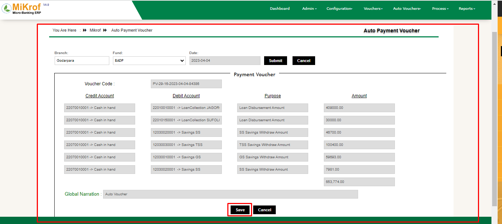এখন এম আই এস(MIS) এর ডে বুকের সাথে সকল পেমেন্ট লেনদেন মিলিয়ে নিয়ে নিচের চিত্রের মতো সেইভ নামক বাটনে ক্লিক করে লেনদেন সংরক্ষিত করতে হবে।
অটো জার্নাল ভাউচার (Auto Journal Voucher) এন্ট্রির নিয়মাবলী
অটো জার্নাল ভাউচার জেনারেট করতে হলে অটো ভাউচার এর উপর মাউস পয়েন্টার রেখে অটো জার্নাল ভাউচার অফশনে এ ক্লিক করতে হবে। তাহলে নিচের মতো ফরম ওপেন হবে।

এখানে চিত্রের মতো সাবমিট বাটনে ক্লিক করলে ঐ দিনের সংগঠিত সকল লেনদেনের যেই লেনদেন গুলো ক্যাশে পেমেন্ট হয়েছে এবং যেগুলো MIS এ অথোরাইজড করা হয়েছে সেই সকল লেনদেন গুলো নিম্নে এইখানে প্রদর্শিত হবে। । যেমনঃ Samity Transfer,write off loan ammount,savings interest amount,loan and savings adjustment amount
এখন এম আই এস(MIS) এর ডে বুকের সাথে সকল ননক্যাশ লেনদেন মিলিয়ে নিয়ে নিচের চিত্রের মতো সেইভ নামক বাটনে ক্লিক করে লেনদেন সংরক্ষিত করতে হবে।
এ আই এস (AIS) রিপোর্ট
এ আই এস (AIS) আর রিপোর্ট সমূহকে নিচে দেওয়া হলোঃ
- 01 Chart Of Accounts
- 02 Openng Balance Report
- 03 Daily Transaction Report
- 04 Ledger Report
- 05 Cash Book
- 06 Bank Book
- 07 Cash & Bank Book
- 08 Trial Balance Report
- 09 Receipt Payment Statement
- 10 Income Statement
- 11 Balance Sheet
- 12 Cash Flow Statement
- 12 Fund Transfer Report
- 13 Budget Allocation Report
- 14 Budget Varience Report
- 15 Branch Wise Ledger Report